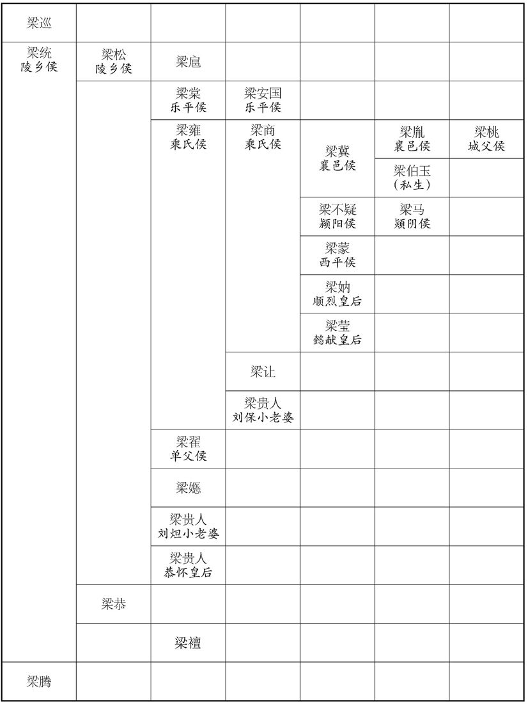

卷次与人物目录 / 卷54
资治通鉴 · 卷第五十四【汉纪四十六】
公元157年至公元163年 · 原文、白话与胡三省注
本页按胡注本编排保存全卷内容。白话采用本站所据译本，未可靠对应的内容另列说明；事件标题用于定位，并非原书文字。
本卷共107段原文，104段有译文对应，3段缺译或待核对。
卷第五十四【汉纪四十六】起强圉作噩（丁酉），尽昭阳单阏（癸卯），凡七年。
卷首原文与注释
孝桓皇帝上之下
公元157年 · 汉孝桓皇帝永寿三年
永寿三年〔（丁酉、一五七）〕
春，正月，己未，赦天下。
春季，正月己未（疑误），大赦天下。
居风令贪暴无度，〔居风县，属九真郡。交州记曰：山有风门，常有风。〕县人朱达等与蛮夷同反，攻杀令，聚众至四五千人。夏，四月，进攻九真，九真太守儿式战死。〔守，式又翻。儿，五兮翻。〕诏九真都尉魏朗讨破之。
居风县县令贪污暴虐没有限度，县民朱达等和蛮夷联合反叛，攻打县城，杀死县令，聚集群众四五千人。夏季，四月，进攻九真郡，九真郡太守式战死。桓帝下诏，命九真郡都尉魏朗率军将朱达等击败。
闰月，庚辰晦，日有食之。
闰五月庚辰晦（疑误），出现日食。
京师蝗。
京都洛阳发生蝗灾。
或上言：「民之贫困以货轻钱薄，宜改铸大钱。」事下四府〔下，遐稼翻。四府，三公府及大将军府。〕群僚及太学能言之士议之。太学生刘陶上议曰：「当今之忧，不在于货，在乎民饥。窃见比年已来，〔比，毗至翻。〕良苗尽于蝗螟之口，杼轴空于公私之求。民所患者，岂谓钱货之厚薄，铢两之轻重哉！就使当今沙砾化为南金，瓦石变为和玉，〔贤曰：诗曰：大赂南金。和玉，卞和之玉。砾，郎狄翻。〕使百姓渴无所饮，饥无所食，虽皇、羲之纯德，〔天地初立，有天皇氏，澹泊无所施为而民自化。伏羲氏始画八卦，造书契以代结绳之政。去洪荒之世未远，故其风朴略。〕唐、虞之文明，犹不能以保萧墙之内也。〔郑氏曰：萧，肃也。墙，谓屏也。君臣相见之礼，至屏而加肃敬焉，是以谓之萧墙。〕盖民可百年无货，不可一朝有饥，故食为至急也。议者不达农殖之本，多言铸冶之便。盖万人铸之，一人夺之，犹能给；况今一人铸之，则万人夺之乎！虽以阴阳为炭，万物为铜，〔贾谊服赋之言。〕役不食之民，使不饥之士，犹不能足无厌之求也。〔厌，于盐翻；下同。〕夫欲民殷财阜，〔扬子曰：君人者务在殷民阜财。〕要在止役禁夺，则百姓不劳而足。陛下愍海内之忧戚，欲铸钱齐货以救其弊，犹养鱼沸鼎之中，栖鸟烈火之上；水、木，本鱼鸟之所生也，用之不时，必至焦烂。愿陛下宽锲薄之禁，〔贤曰：锲，刻也，音口结翻。〕后冶铸之议，听民庶之谣吟，问路叟之所忧，〔通下情也。贤曰：列子曰：昔尧理天下五十年，不知天下理乱，尧乃微服游于康衢，儿童谣曰：「立我蒸民，莫匪尔极，不识不知，顺帝之则。」说苑曰：孔子行游中路，闻哭者其音甚悲。孔子避车而问之曰：「夫子非有丧也，何哭之悲﹖」虞丘子对曰：「吾有三失：吾少好学，周偏天下，还，后吾亲丧，是一失也。事君骄奢不遂，是二失也。厚交友而后绝，是三失也。」〕瞰三光之交耀，视山河之分流，〔瞰，苦鉴翻，视也。贤曰：三光，日、月、星也。分，谓山。流，谓河。言日、月有㻙食之变，星、辰有错行之异，故视其文耀也。山崩、川竭，皆亡之征，不可不察。〕天下之心，国家大事，粲然皆见，无有遗惑者矣。伏念当今地广而不得耕，民众而无所食，群小竞进，秉国之位，鹰扬天下，鸟钞求饱，〔钞，楚交翻。〕吞肌及，并噬无厌。诚恐卒有役夫、穷匠起于版筑之间，〔卒，读曰猝。贤曰：役夫，谓如陈涉起蕲也。谓如骊山之徒也。余谓陈涉、黥布皆可以言役夫，穷匠则山阳铁官徒苏令等是也。〕投斤攘臂，登高远呼，〔呼，火故翻。〕使愁怨之民响应云合，虽方尺之钱，何有能救其危也！」〔言虽钱大方尺，亦不能救天下之乱也。〕遂不改钱。
有人上书说：“人民所以贫困，原因在于钱币的重量太轻，厚度太薄，应该改铸大钱。”奏章交付给大将军、太尉、司徒、司空等四府的官员，以及太学中有见解的学生，共同讨论。太学生刘陶上书说：“我们当前面临的忧患，不在于钱币，而在于人民饥荒。我看到，连年以来，茂盛的庄稼都被蝗虫和螟虫吃光；民间所织的布匹都被朝廷和官吏私人搜刮一空。人民所忧患的，难道是钱币的厚薄和铢两的轻重吗？即令当前能把沙砾化作南方出产的黄金，把瓦片变成和发现的白玉，而让百姓渴了没有水喝，饿了没有饭吃，尽管有天皇氏、伏羲氏的纯洁美德，唐尧和虞舜的清明政治，仍不能保证宫室门屏之内的安全。人民可以有一百年不用钱币，不可以有一天饥饿，所以吃饭才是最急迫的问题。主张改铸钱币的人，不了解农业生产是国家的根本大计，多数只说改铸钱币的好处。但是，如果一万个人铸钱，一个人掠夺，仍是不能满足。何况现在是一个人铸钱，而有一万个人来掠夺！尽管把天地间的阴阳二气都当作炭火，把万物都当成铜，驱使不吃饭的人民，使用不饥饿的役夫，仍不能满足永无止境的需求。要想使人民富裕，财富充足，最要紧的在于停止征役，禁止掠夺，则百姓不必劳苦而自然富足。如果陛下哀怜天下百姓的忧愁，想改铸钱币，使其整齐划一，用来拯救时弊，这就犹如将鱼养在鼎的沸水之中，让鸟栖息在燃烧着烈火的树木之上。水和树木，本来是鱼和鸟赖以生存的，用的不是时候，一定会被烧焦煮烂。希望陛下放宽刻薄的禁令，暂缓实行改铸钱币的建议，倾听民间百姓流传的评议时政的歌谣和谚语，询问路旁老人的忧患，观察日、月、星辰等三光的变异，察视山峰崩裂和河水干涸的警告。天下人民的心愿，国家急需办理的大事，就可以看得明明白白，没有遗漏和疑惑的地方。我想到，当今田地虽然宽广却得不到耕种，人民虽然很多却得不到食物。众小人争相抢夺官爵，掌握国家的高位，犹如兀鹰凶残而横行天下，犹如乌鸦掠夺而贪婪无厌，连皮带骨，把人民一口吞下，而仍不能满足。我担心役夫和穷困的工匠会突然从版筑之间崛起，扔掉斧头，捋衣出臂，登高向远方呐喊，使忧愁怨恨的人民起来响应，犹如云一样纷纷集合，到那时候，即令有一尺见方的钱币，营怎能挽救危亡！”于是不改铸钱币。
冬，十一月，司徒尹颂薨。〔考异曰：袁纪在六月。今从范书。〕
冬季，十一月，司徒尹颂去世。
长沙蛮反，寇益阳。〔益阳县属长沙郡。贤曰：县在益水之阳，今漂州县，故城在县东。〕
长沙郡蛮人反叛，攻打益阳县。
以司空韩演为司徒；〔演，以善翻。〕以太常北海孙朗为司空。
任命司空韩为司徒；擢升太常、北海人孙朗为司空。
公元158年 · 汉孝桓皇帝延熹元年
延熹元年〔（戊戌、一五八）〕
上传原文的注释括号有异常，字符原样保留；无法可靠划分的段落默认全文显示。
本年事件索引（现代整理）
夏，五月，甲戌晦，日有食之。太史令陈授因小黄门徐璜陈「日食之变咎在大将军冀」。冀闻之，讽雒阳收考授，〔讽雒阳令收考之也。〕死于狱。帝由是怒冀。〔考异曰：袁纪曰：「冀以私憾专杀议郎邴尊，上益怒。」今从范书。〕
夏季，五月甲戌晦（二十九日），出现日食。太史令陈授通过小黄门徐璜，奏称：“出现日食灾异，罪过在于大将军梁冀。”梁冀听到这个消息后，于是，授意洛阳县令逮捕和拷问陈授，陈授死在狱中。桓帝因此恼恨梁冀。
京师蝗。
京都洛阳发生蝗灾。
六月，戊寅，赦天下，改元。
六月戊寅（初四），大赦天下。改年号。
大雩。〔公羊传曰：大雩，旱祭也。何休注曰：君亲之南郊，以六事谢过，自责曰：政不善欤﹖民失职欤﹖宫室崇欤﹖妇谒盛欤﹖苞苴行欤﹖谗夫昌欤﹖使童男女各八人舞而呼雩，故谓之雩。郑玄曰：雩，吁嗟求两之祭也。服虔曰：雩，远也，远为百谷祈膏雨也。陆佃曰：雩，雨不雨未定也。〕
举行求雨的祭祀大典。
秋，七月，甲子，太尉黄琼免；以太常胡广为太尉。
秋季，七月甲子（二十日），太尉黄琼被免官，擢升太常胡广为太尉。
冬，十月，帝校猎广成，〔广成苑在河南新城县。〕遂幸上林苑。〔此上林苑在雒阳西。〕
冬季，十月，桓帝前往广成苑打猎，随后到上林苑。
十二月，南匈奴诸部并叛，与乌桓、鲜卑寇缘边九郡。帝以京兆尹陈龟为度辽将军。〔考异曰：按匈奴传，每除度辽将军辄书之，此陈龟及前李膺、后种暠皆不记，一时既不当有两官，今约其事，分着前后。〕龟临行，上疏曰：「臣闻三辰不轨，〔言三辰之行不顺轨也。〕擢士为相；蛮九不恭，拔卒为将。臣无文武之材而忝鹰扬之任，〔诗曰：维师尚父，时维鹰扬。尔雅翼：鹰好扬，隼好翔，故以比尚父之武。〕虽殁躯体，无所云补。今西州边鄙，土地塉埆，〔塉，秦昔翻。贤曰：埆，音觉，又音确，土薄也。〕民数更寇虏，〔数，所角翻。更，工衡翻；下租更同。〕室家残破，虽含生气，实同枯朽。往岁并州水雨，灾螟互生，稼穑荒耗，租更空阙。〔贤曰：更，谓卒更钱也。〕陛下以百姓为子，焉可不垂抚循之恩哉！〔焉，于虔翻。〕古公、西伯天下归仁，〔古公亶父避狄，去邠居岐，从之者如归市。帝王世纪曰：西伯至仁，百姓襁负而至。〕岂复舆金辇宝以为民惠乎！〔复，扶又翻。〕陛下继中兴之统，承光武之业，临朝听政而未留圣意。且牧守不良，或出中官，〔谓牧守出于中官之所引用也。〕惧逆上旨，取过目前。〔过，度也。〕呼嗟之声，招致灾害，胡虏凶悍，〔悍，下罕翻，又侯旱翻。〕因衰缘隙；而令仓库单于豺狼之口，〔单，与殚同，尽也。〕功业无铢两之效，〔十絫为铢，二十四铢为两。〕皆由将帅不忠，聚奸所致。前凉州刺史祝良，初除到州，多所纠罚，太守令长，贬黜将半，〔长，知两翻。〕政未踰时，功效卓然，实应赏异，以劝功能；改任牧守，去斥奸残；〔去，羌吕翻。〕又宜更选匈奴、乌桓护羌中郎将、校尉，〔护匈奴中郎将，护乌桓、护羌校尉。更，工衡翻。校，户教翻。〕简练文武，授之法令；除并、凉二州今年租、更，〔租，赋也。更，役也。更，工衡翻；下同。〕宽赦罪隶，扫除更始；则善吏知奉公之佑，恶者觉营私之祸，胡马可不窥长城，塞下无候望之患矣。」帝乃更选幽、并刺史，自营、郡太守、都尉以下，多所革易。〔京兆虎牙营、扶风雍营，皆都尉领之。诸郡各有守、都尉。〕下诏为陈将军除并、凉一年租赋，以赐吏民。〔为，于伪翻。〕龟到职，州郡重足震栗，〔言重足而立也。重，音直龙翻。〕省息经用，岁以亿计。
十二月，南匈奴各部部众同时反叛，和乌桓、鲜卑等联合侵犯沿边九郡。桓帝任命京兆尹陈龟为度辽将军。陈龟临行前，向桓帝上书说：“我曾经听说，当日、月、星辰不顺着轨道运行时，应该选拔士人为相；蛮夷不恭顺朝廷时，应该选拔士卒为将。我没有文武双全的才能，却担当大军统帅的重任，即令身死，也难以报答。而今，西方边界地区，土地瘠薄多石，人民不断受到外族的侵犯掳掠，家家户户都已经残破不堪，虽然还有一口气可以呼吸，但实际上如同一具枯干的朽骨。往年并州下大雨，同时发生水灾和虫灾，农作物荒废，人民缴纳不起租税和更赋。陛下把百姓当作子女，怎么能够不尽抚养的恩惠？古公姬父、西伯姬昌，天下的人都已纷纷归向他俩，哪里还需要再用车辆载着金银财宝，向人民施行恩惠？陛下继承中兴的皇统，接续光武帝的帝业，临朝处理政务，然而对这一方面却没有特别留意。并且，州牧和郡太守都不贤良，有的人甚至是出自宦官的推荐，他们畏惧冒犯圣上的旨意，就只求得过且过。人民呼喊和嗟叹的声音，招来更大的灾害。外族凶猛强悍，趁着政治衰败，利用人民的怨恨，起兵作乱。至使仓库的粮秣，全被豺狼吃光；朝廷屡次出兵讨伐，却收不到丝毫功效。这都是由于将帅不忠，贪官聚敛所造成的。前凉知刺史祝良，初被任命到州上任后，对贪官污吏多有举发和惩处，郡太守和县令、长，受到贬谪和撤职的将近半数，任职不到一年，功绩和效果卓著，实在应该给他特别的奖赏，以勉励他的功绩和才能。还应更换其他不称职的州牧和郡太守，罢免邪恶贪残的官吏。并应该重新遴选护匈奴、乌桓、羌等中郎将及校尉，要求具备文武全才，授予行使法令的权力。免除并州、凉州今年应该缴纳的田租和更赋，宽大和赦免罪犯，给他们改过自新的机会。这样，善吏知道奉公守法的福气，恶吏知道营私舞弊的祸害，胡马将不会再暗中窥伺长城，边塞也将没有候望烽火的忧患。”于是，桓帝重新任命幽州、并州刺史，京兆虎牙营、扶风雍营的都尉，郡太守和都尉及以下的官吏，也多有更换。并且下诏：“为了陈将军的请求，免除并州、凉州一年的田租和更赋，以表示朝廷对官吏和人民的恩赐。”陈龟到职以后，所在州郡官府的官吏，都大为震恐，节省下来的经费，每年以亿计算。
诏拜安定属国都尉张奂为北中郎将，〔按奂传，即护匈奴中郎将。〕以讨匈奴、乌桓等。匈奴、乌桓烧度辽将军门，〔贤曰：时度辽将军屯五原。〕引屯赤坑，烟火相望，兵众大恐，各欲亡去。奂安坐帷中，与弟子讲自若，军士稍安。乃潜诱乌桓，阴与和通，〔诱，音酉。〕遂使斩匈奴、屠各渠帅，〔屠各，匈奴别种也。屠，直于翻。帅，所类翻。〕袭破其众，诸胡悉降。奂以南单于车儿不能统理国事，乃拘之，奏立左谷蠡王为单于。〔谷蠡，音鹿黍。〕诏曰：「春秋大居正；车一心向化，何罪而黜！其遣还庭！」言春秋之义大居正。贤曰：春秋法五始之要，故经曰：元年，春，正月。言王者即位之年宜大开恩，宥其居正。车儿即是桓帝即位之建和元年立，自立以来一心向化，宜宽宥之。考异曰：袁纪：「元康元年，四月，中郎将张奂以车儿不能治国事，上言更立左鹿蠡王都绀为单于；诏不许。」范书匈奴传在延熹元年，今从之。〕
本段缺少可靠对应白话，原文完整保留；未使用生成译文。
大将军冀与陈龟素有隙，谮其沮毁国威，挑取功誉，〔沮，在吕翻。贤曰：挑，犹取也，独取其名，如挑战之义，音，徒了翻。〕不为胡虏所畏，坐征还，以种暠为度辽将军。〔种，音冲。暠，工老翻。〕龟遂乞骸骨归田里，复征为尚书。〔复，扶又翻。〕冀暴虐日甚，龟上疏言其罪状，请诛之，帝不省。〔省，景翻。〕龟自知必为冀所害，不食七日而死。〔东都之臣以死攻外戚者，郑弘、陈龟二人而已。〕种暠到营所，先宣恩信，诱降诸胡，其有不服，然后加讨；羌虏先时有生见获质于郡县者，〔质，音致。〕悉遣还之；诚心怀抚，信赏分明，由是羌、胡皆来顺服。暠乃去烽燧，除候望，〔去，羌吕翻。〕边方晏然无警；入为大司农。
大将军梁冀和陈龟之间一向有怨恨。梁冀诬陷陈龟毁坏国家的威严，牟取个人的功劳和名誉，不能得到匈奴人的敬重和畏服。陈龟因罪被征召，返回京都洛阳，种被任命为度辽将军。于是，陈龟请求退休，回归故乡。后来，朝廷又征召他担任尚书。这时，梁冀暴虐的程度，一天比一天厉害，陈龟向桓帝上书弹劾他的罪状，请求诛杀梁冀，桓帝不予理会。陈龟知道自己一定会被梁冀所害，于是绝食七天而死。种到度辽将军大营以后，首先宣布朝廷的恩德和信义，劝诱外族归降；有不归降的，再进行讨伐。有些羌人先前被生擒，现囚禁在郡县官府做人质，种命令将他们全部释放。他诚心诚意地进行怀柔和安抚，赏罚分明，因此羌人、胡人都纷纷前来归服。于是，种下令拆除烽火台和了望亭，边境地区一片安宁，没有警报。种被调回京都洛阳担任大司农。
译本中未与胡注本可靠对应的内容
以下另列供核对版本差异，不并入胡注本正文。
译本所附古文
诏拜安定属国都尉张奂为北中郎将，以讨匈奴、乌桓等。匈奴、乌桓烧度辽将军门，引屯赤坑，烟火相望，兵众大恐，各欲亡去。奂安坐帷中，与弟子讲诵自若，军士稍安。乃潜诱乌桓，阴与和通，遂使斩匈奴、屠各渠帅，袭破其众，诸胡悉降。奂以南单于车儿不能统理国事，乃拘之，奏立左谷蠡王为单于。诏曰：“《春秋》大居正；车儿一心向化，何罪而黜！其遣还庭！”
译本白话
桓帝下诏，任命安定属国都尉张奂为北中郎将，率军讨伐匈奴、乌桓等。 匈奴、乌桓用火焚烧屯驻在五原的度辽将军府大门，又前往赤据守， 烟火可以看得很清楚。张奂的部队，大为惊恐，纷纷准备逃亡。可是，张奂仍然安坐帐中，跟他的门徒和学生照样自如地讲解和朗诵经书，军心才稍微安定下来。于是，张奂秘密派使者劝说乌桓，暗中和乌桓和好。然后，命乌桓斩杀匈奴以及匈奴的旁支屠各的首领，大破匈奴部众，匈奴人全部投降。张奂认为南匈奴单于车儿没有能力统御和治理匈奴国事，于是将他软禁，奏请朝廷改立左谷蠡王为单于。桓帝下诏说：“《春秋》主张大居正，以君位传子为常道。车儿一心归向朝廷，有什么罪过要罢黜他？送他返回王庭！”
公元159年 · 汉孝桓皇帝延熹二年
二年〔（己亥、一五九）〕
上传原文的注释括号有异常，字符原样保留；无法可靠划分的段落默认全文显示。
本年事件索引（现代整理）
- 鲜卑入寇雁门
- 蜀郡夷人入寇蚕陵
- 恢复禁止刺史、二千石服三年丧
- 京师大水
- 鲜卑入寇辽东
- 梁皇后去世，葬于懿陵
- 梁冀专权暴虐，梁氏门族遍布朝廷
- 桓帝密议诛梁冀，五宦官参与定策
- 桓帝发动宫廷政变，梁冀自杀，梁氏被诛
- 梁贵人立为皇后，后复姓邓氏
- 单超等五宦官受封列侯，宦官专权渐成
- 黄琼、祝恬、盛允分别任三公
- 黄琼弹劾贪污官吏，海内称赞
- 范滂巡察冀州，弹劾权豪贪污
- 陈蕃荐举五名隐士，朝廷征召皆不至
- 徐稚拒绝征辟，以清节闻名
- 姜肱与兄弟友爱，拒绝仕进
- 袁闳隐居不仕
- 李昙之母虐待继子，李昙反而更加孝谨
- 魏桓直言外戚与权贵不可去，拒绝征召
- 宦官受封，李云上书斥责朝廷错乱
- 桓帝巡幸长安
- 单超任车骑将军
- 桓帝自长安还京
- 段颎击败入寇陇西的羌人
- 单匡贪赃纵暴，杨秉查办反遭免官
- 陈蕃谏止宦官外戚滥封，桓帝稍作裁减
- 桓帝自称汉室中主，爰延直言以宦官用权为患
春，二月，鲜卑寇鴈门。
两版字句有差异，建议核对原文。
春季，二月，鲜卑侵犯雁门郡。
蜀郡夷寇蚕陵。〔贤曰：蚕陵县属蜀郡，故城在今翼州翼水县西；有蚕陵山，因以名焉。宋白曰：翼州卫山县，本汉蚕陵县地，故城在县西，有蚕陵山。〕
蜀郡夷人攻打蚕陵县。
三月，复断刺反、二千石行年丧。〔永兴二年，听行三年丧。断，丁管翻。〕
两版字句有差异，建议核对原文。
三月，再次取消刺史和二千石官吏为父母服丧三年的规定。
夏，京师大水。
夏季，京都洛阳发生水灾。
六月，鲜卑寇辽东。
本段缺少可靠对应白话，原文完整保留；未使用生成译文。
梁皇后恃姊、兄荫势，〔姊顺烈皇后，兄大将军冀也。荫，庇也。今人谓凭借世资得官者为荫官，盖取木为喻，言能荫庇其本根也。〕恣极奢靡，兼倍前世，专宠勡忌，六宫莫得进见。及太后崩，恩宠顿衰。后既无嗣，每宫人孕育，鲜得全者。〔鲜，息浅翻。〕帝虽迫畏梁冀，不敢谴怒，然进御转希，〔按周礼注：郑众云：六宫后五前一。王之妃石二十人：后一人，夫人三人，嫔九人，世妇二十七人，女御八十一人。郑玄曰：六宫，谓后也。妇人称寝曰宫，宫，隐蔽之言。后象王，立六宫而居之，亦正寝一，燕寝五，夫人以下，分居后之六宫。每宫九嫔一人，世妇三人，女御九人；其余九嫔三人，世妇九人，女御二十七人，从后唯所燕息焉。从后者，五日而沐浴，其次又上，十五日而偏云。夫人如三公，从容论妇礼，此礼所谓「以时御叙于王所」者也。郑玄又曰：凡群妃御见之法，月与后妃其象也，卑者宜先，尊者宜后。竹御八十一人当九夕，世妇二十七人当三夕，九嫔九人当一夕，三夫人当一夕，后当一夕，十五日而偏。自望后反之。按二郑所云，汉之宫中，贯鱼无序，专房之燕，蔽固后宫，宁复有此制乎！〕后益忧恚。〔恚，于避翻。〕秋，七月，丙午，皇后梁氏崩。乙丑，葬懿献皇后于懿陵。〔贤曰：谥法：温和圣善曰懿；聪明叡知曰献。〕
梁皇后仗恃姊姊梁太后和哥哥大将军梁冀的庇护和势力，穷极奢华，比前世加倍，独占桓帝的宠爱，嫉妒成性，六宫的其他嫔妃都不得侍奉桓帝。等到梁太后去世，桓帝对她的恩宠顿时衰退。梁皇后自己没有儿子，每当其他嫔妃怀有身孕，很少能得到保全。桓帝虽然畏惧梁冀，不敢谴责和发怒，然而让梁皇后来陪侍的次数变得稀少，梁皇后越来越忧愁愤恨。秋季，七月丙午（初八），梁皇后去世。乙丑（二十七日），将她安葬在懿陵，谥号为懿献皇后。
梁冀一门，前后七侯，三皇后，〔冀祖雍封乘氏侯，冀封襄邑侯；及嗣乘氏侯，又封其子胤襄吧侯，弟不疑颍阳侯，蒙西平侯，不疑子马颍阴侯，胤子桃城父侯，是七封侯也。恭怀、顺烈、懿献三皇后。〕六贵人，二大将军，夫人、女食邑称君者七人，尚公主者三人，其余卿、将、尹、校五十七人。〔卿，九卿也。将，中郎将也。尹，河南、京兆尹也。校，诸校尉也。校，户教翻。〕冀专擅威柄，凶恣日积，宫卫近侍，并树所亲，〔贤曰：树，置也。〕禁省起居，纤微必知。其四方调发，〔调，徒吊翻。〕岁时贡献，皆先输上第于冀，〔贤曰：上第，第一也。〕乘舆乃其次焉。〔乘，绳证翻。〕吏民赍货求官、谓罪者，道路相望。〔请罪，谓请求以脱罪也。〕百官迁召，皆先到冀门笺檄谢恩，〔字书：笺，表也，识也，书也。左雄传，文吏课笺奏。自后世言之，奏者达之天子，笺者用之中宫、东宫、将相大臣，檄者征召传令用之，非所以谢恩也。窃意自蔡伦造纸之后，用纸书者曰笺，用木书者曰檄，故言笺檄谢恩也。〕然后敢诣尚书。下邳吴树为宛令，〔宛，于元翻。〕之官辞冀，冀宾客布在县界，以情托树，树曰：「小人奸蠹，比屋可诛。明将军处上将之位，宜崇贤善以补朝阙。〔比，部必翻，又毗寐翻，连次也。补朝阙，谓补朝政阙也。处，昌吕翻。朝，直遥翻。〕自侍坐以来，〔坐，徂卧翻。〕未闻称一长者，而多托非人，诚非敢闻！」冀默然不悦。树到县，遂诛杀冀客为人害者数十人。树后为荆州刺史，辞冀，冀鸩之，出，死车上。辽东太守侯猛初拜，不谒冀，冀托以他事腰斩之。郎中汝南袁着，年十九，诣阙上书曰：「夫四时之运，功成则退，〔蔡泽之言。〕高爵厚宠，鲜不致灾。〔鲜，息浅翻。〕今大将军位极功成，可为至戒；宜遵县车之礼，〔县，读曰悬。〕高枕颐神。传曰：『木实繁者披枝害心。』〔范睢曰：木殖繁者披其枝，披其枝者伤其心。〕若不抑损盛权，将无以全其身矣！」冀闻而密遣掩捕，着乃变易姓名，托病伪死，结蒲为人，市棺殡送；冀知其诈，求得，笞杀之。太愿郝絜、胡武，好危言高论，〔好，呼到翻。〕与着友善，絜、武尝连名奏记三府，荐海内高士，而不诣冀；冀追怒之，敕中都官移檄禽捕，〔司隶校尉领中都官徒千二百人，冀盖敕都官从事使移檄禽捕也。〕遂诛武家，死者六十余人。絜初逃亡，知不得免，四舆榇奏书冀门，书入，仰药而死，家乃得全。安帝嫡母耿贵人薨，冀从贵人从子林虑侯承求贵人珍玩，不能得，冀怒，并族其家十余人。〔人从，才用翻。〕涿郡崔琦以文章为冀所善，琦作外戚箴、白鹄赋以风；外戚箴曰：「赫赫外戚，华宠煌煌。昔在帝舜，德降英、皇；周兴三母，有莘崇汤；宣王晏起，姜后脱簪；齐桓好乐，卫姬不音。皆辅主以礼，扶君以仁，达才蔽人，陵长间旧，圮剥至亲，并司匹嫡，淫女毙陈。匪贤是上，番为司徒，荷爵负乘，采食名都，诗人是刺，德用不怃。暴辛惑妇，拒谏自孤，蝮蛇其心，纵毒不辜，诸父是杀，孕子是刳，天怒地忿，人谋鬼图，甲子昧爽，身首分离。初为天子，后为人螭，非但耽色，母后尤然；不相率以礼，而竞奖以权，先笑后号，卒以辱残，家国泯绝，宗庙烧燔。末嬉丧夏，褒姒毙周，妲己亡殷，赵灵沙丘。戚姬人豕，吕宗以败；陈后作巫，卒死于外；霍欲鸩子，身乃罹废。故曰：无谓我贵，天将尔摧；无恃常好，免有歇微；无怙常幸，爱有陵迟；无曰我能，天人尔违。患生不德，福有慎机，日不常中，月盈有亏，履道者固，仗势者危。微臣司戚，敢告在斯。」箴言外之祸深切，故具载之。怃，音呼。风，读曰讽。〕冀怒。琦曰：「昔管仲相齐，乐闻讥谏之言；〔乐，音洛。〕萧何佐汉，乃设书过之吏。今将军屡世台辅，任齐伊、周，而德政未闻，黎元涂炭，不能结纳贞良以救祸败，反欲钳塞士口，〔塞，悉则翻。〕杜蔽主听，将使玄黄改色、鹿马易形乎！」〔玄黄者，天地之色也，使之改色，言将使天地颠倒也。鹿马易形，指赵高、秦二世之事。琦之论可谓深切矣。〕冀无以对，因遣琦归。琦惧而亡匿，冀捕得，杀之。
两版字句有差异，建议核对原文。
梁冀家族一门，前后共有七个侯，三个皇后，六个贵人， 两个大将军，夫人和女儿享有食邑而称君的七人，娶公主为妻的三人，其他担任卿、将、尹、校等官职的五十七人。梁冀把持朝廷威权，独断专行，凶暴放肆，日甚一日。宫廷禁军和皇帝最亲近的侍卫和随从中，都有他的亲信，皇宫内部皇帝的起居，再细小的情况，他都必定了如指掌。向四方征调的物品，以及各地每年按时向皇帝贡献的礼品，都先将最好的呈送给梁冀，皇帝还得排在他的后面。官吏和百姓带着财物，到梁冀家里请求做官或者免罪的，在道路上前后相望。文武百官升迁或被征召，都要先到梁冀家门呈递谢恩书，然后才敢到尚书台去接受指示。下邳国人吴树被任命为宛县县令，上任之前向梁冀辞行，梁冀的宾客散布在宛县县境的很多，梁冀托吴树照顾他们。吴树说：“邪恶的小人是残害百姓蛀虫，即令是近邻，也应诛杀。将军高居上将之位，应该崇敬贤能，弥补朝廷的缺失。可是，自从我随同您坐下以后，没有听见您称赞一位长者，而嘱托我照顾很多不恰当的人，我实在不敢听！”梁冀沉默不语，心里很不高兴。吴树到县上任后，便将梁冀的宾客中为人民所痛恨的数十人诛杀。吴树后来升任荆州刺史，上任前向梁冀辞行，梁冀请他喝下了毒酒。吴树出来，死在车上。东郡太守侯猛，刚刚接受任命时，没有去谒见梁冀，梁冀就另外找了一个罪名将他腰斩。郎中、汝南人袁著，年方十九岁，到宫门上书说：“春夏秋冬的运转，每个季节都在达到极盛时便消退。太高的官职爵位，过分的宠爱信任，很少不招来灾祸。如今大将军已经位极人臣，功成名遂，应该特别警戒；最好是效法汉元帝时的御史大夫薛广德，把皇帝赏赐他的安车悬挂起来，高卧家中，颐养精神，不再过问政事。经传上说：‘树木果实太多，会劈开树枝，伤害树根。’如果不抑制和减损他手中所掌握的过盛的权力，恐怕不能保全他的性命。”联冀听到这个消息后，秘密派人搜捕袁著。于是，袁著改名换姓，假装有病身死，家里人用蒲草结扎成尸体，买来棺木殡葬。梁冀识破这是一个骗局，继续追捕，终于抓到袁著，将他鞭打至死。太原人郝、胡武，好说惊人的话，喜欢高谈阔论，和袁著交情很好。郝、胡武曾经联名上书太尉、司徒、司空等三府，推荐天下的高明人士，却没有将推荐书送给梁冀。袁著死后，梁冀记起旧恨，命京师有关官署发文书逮捕郝、胡武。于是，胡武全家被杀，死了六十余人。郝起初逃亡，后来知道无法逃掉，于是带着棺木，亲自到梁冀家门上书，将书递进去后，便服毒而死，家属才得以保全。安帝的嫡母耿贵人去世，梁冀向耿贵人的侄儿、林虑侯耿承索取耿贵人的珍宝玩物，但没有得到手。于是梁冀恼羞成怒，诛杀耿承及他的家属十余人。涿郡人崔琦因擅长于撰写文章，而得到梁冀的喜爱。崔琦作《外戚箴》、《白鹄赋》向梁冀讽劝。梁冀大怒。崔琦对梁冀说：“从前，管仲担任齐国的宰相，喜欢听讥刺和规劝的话；萧何辅佐汉室王朝，专门设置记录自己过失的官吏。而今，将军身居辅政高位两朝，责任和伊尹、周公同等重大，可是没有听说您推行德政，却只生灵涂炭，灾难深重。将军不但不能结交忠贞贤良来拯救大祸，反而想要堵塞士人的口，蒙蔽主上的耳目，使天地颜色颠倒，鹿马换形吗？”梁冀无法回答，便将崔琦遣送回乡。崔琦因恐惧而离家，四处逃亡躲藏。梁冀派人将他搜捕到手，加以诛杀。
本段人物：萧何

冀秉政几二十年，〔顺帝永和六年，冀为大将军，至是岁凡十九年。几，居希翻。〕威行内外，天子拱手，不得有所亲与，〔与，读曰豫。〕帝既不平之；及陈授死，帝愈怒。和熹皇后从兄子郎中邓香妻宣，生女猛，从，才用翻。〕香卒，宣更适梁纪；纪，孙寿之寿也。寿以猛色美，引入掖庭，为贵人，冀欲认猛为其女，易猛姓为梁。冀恐猛姊伲议郎邴尊沮败宣意，〔贤曰：沮，坏也，恐尊害败宣意，不从其改梁姓也。败，补迈翻。〕遣客刺杀之。〔刺，七亦翻。〕又欲杀宣，宣家与中常侍袁赦相比，〔贤曰：相邻比也。比，音毗至翻，又音毗。〕冀客登赦屋，欲入宣家，赦觉之，鸣鼓会众以告宣。宣驰入白帝，帝大怒，因加厕，独呼小黄门史唐衡，〔小黄门史，小黄门之掌书者也。〕问：「左右与外舍不相得者，谁乎﹖」〔左右，谓宦官也。贤曰：外舍，谓皇后家也。〕衡对：「中常侍单超、〔单，音善。〕小黄门史左悺与梁不疑有隙；〔悺，工唤翻，又音绾。〕中常侍徐璜、黄门令具瑗〔具，姓也；左传有具丙。瑗，于眷翻。考异曰：宦者传作「中常侍贝瑗」，今从梁冀传。〕常私忿疾外舍放横，〔横，户孟翻。〕口不敢道。」于是帝呼超、悺入室，谓曰：「梁将军兄弟专朝，〔朝，直遥翻。〕迫胁内外，公卿以下，从其风旨，今欲诛之，于常侍意如何﹖」超等对曰：「诚国奸贼，当诛日久；臣等弱劣，未知圣意如何耳。」帝曰：「审然者，常侍密图之。」对曰：「图之不难，但恐陛下腹狐疑。」帝曰：「奸臣胁国，当伏其罪，何疑乎！」于是召璜、瑗五人共定其议，帝啮超臂出血为盟。〔啮，倪结翻，噬也。〕超等曰：「陛下今计已决，勿复更言，〔复，扶又翻。〕恐为人所疑。」
梁冀把持朝政将近二十年，威势和权力震动内外，桓帝只好拱手， 什么事都不能亲自参与。对于这种情况，桓帝早已忿忿不平，及至陈授死去，他愈发愤怒。和熹皇后邓绥的侄儿、郎中邓香的妻子宣，生下女儿邓猛。邓香死后，宣改嫁给梁纪为妻。梁纪，即梁冀之妻孙寿的舅父。孙寿因邓猛美貌，把她送进掖庭，被桓帝封为贵人。梁冀打算把邓猛认作自己的女儿，将邓猛改姓为梁猛，可是害怕邓猛的姊夫、议郎邴尊从中破坏，说服岳母宣予以拒绝，于是派刺客将邴尊杀死。其后，梁冀又想杀害邓猛的母亲宣。宣家和中常侍袁赦的家相邻，当梁冀派遣的刺客爬上袁赦家的屋顶，准备进入宣家时，被袁赦发觉。于是袁赦擂鼓聚集众人，通知宣家。宣急忙奔入皇宫，向桓帝报告，桓帝勃然大怒。于是，他单独招呼小黄门史唐衡跟随他上厕所，问道：“我的左右侍卫，和皇后娘家不投合的，有谁？”唐衡回答说：“中常侍单超、小黄门史左和梁不疑有仇。中常侍徐璜、黄门令具瑷，经常私下对皇后娘家放纵骄横表示愤恨，只是不敢开口。”于是，桓帝将单超、左叫进内室，对他俩说：“梁将军兄弟在朝廷专权，胁迫内外，三公、九卿以下，都得按着他们的旨意行事，现在，我想要诛杀他们，你们二位的意思如何？”单超等回答说：“梁冀兄弟的确是国家的奸贼，早就应该诛杀；只是我们的力量太弱小，不知圣意如何罢了。”桓帝又说：“确实如你们所说，那么，请你们秘密谋划。”单超等回答说：“谋划并不困难，只恐怕陛下心中狐疑不决。”桓帝说：“奸臣威胁国家，应当定罪伏法，为什么狐疑不决呢！”于是，把徐璜、具瑷叫来，桓帝和五个宦官共同定计，桓帝将单超的手臂咬破出血，作为盟誓。单超等人对桓帝说：“陛下如今既然已下定决心，千万不要再提这件事，怕会引起猜疑。”
冀心疑超等，八月，丁丑，使中黄门张恽入省宿，以防其变。〔使恽入禁中直宿，以防超等；而无上旨，径使恽入，自恃行宫省，故敢然。恽，于粉翻。〕具瑗敕吏收恽，以「辄从外入，欲图轨。」〔言欲谋逆，不由轨道也。〕帝御前殿，召诸尚书人，发其事，使尚书令尹勋持节勒丞、郎以下皆操兵守省合，〔丞，郎，尚书左、右丞及尚书郎也。操，七刀翻。〕敛诸符节送省中，使具瑗将左右貛驺、〔贤曰：驺，骑士也。余按续汉志：太仆旧有六貛，中兴省约，但置一貛曰未央貛，主乘舆及貛中诸马。后又置左骏令貛，别主乘舆御马。未央貛卒驺二十人，右骏貛从可知也。〕虎贲、羽林、都候剑戟士〔续汉志：左右都候各一人，秩六百石，主剑戟士，徼循宫中及天子有所收考，属卫尉。〕合千余人，与司隶校尉张彪共围冀第，使光禄勋袁盱持节收冀大将军印绶，〔盱，音吁。〕徙封恉京都乡侯。冀及妻寿即日皆自杀；不疑、蒙先卒。悉收梁氏、孙氏中外宗亲送诏狱，无少长皆弃市；〔少，诗照翻。长，知两翻。〕他所连及公卿、列校、刺史、二千石，死者数十人。〔校，户教翻。〕太尉胡广、司徒韩演、司空孙朗皆坐阿附梁冀，不卫宫，止长寿亭，减死一等，免为庶人。故吏、宾客免黜者三百余人，朝廷为空。〔为，于伪翻。〕是时，事猝从中发，使者交驰，公卿失其度，官府市里鼎沸，数日乃定；百姓莫不称庆。收�为]货，县官斥卖，合三十余万万，以充王府用，减天下税租之半，散其苑囿，以业穷民。
梁冀果然对单超等产生猜疑，八月丁丑（初十）， 派遣中黄门张恽入宫住宿，以防范意外变故。具瑷命令属吏逮捕张恽，罪名是：“擅自从外入宫，想要图谋不轨。”桓帝登上前殿，召集各位尚书前来，揭发了这件事，派遣尚书令尹勋持节统率丞、郎以下官吏，命全都手执兵器，守卫省阁，将所有代表皇帝和朝廷的符节收集起来，送进内宫。又派遣具瑷率领左右御厩的骑士、虎贲、羽林卫士、都候所属的剑戟士，共计一千余人，和司隶校尉张彪一同包围梁冀的府第。派光禄勋袁持节，向梁冀收缴了他的大将军印信，将他改封为比景都乡侯。梁冀和他的妻子孙寿，当天双双自杀。梁不疑、梁蒙在此以前已经去世。将梁氏和孙氏家族，包括他们在朝廷和地方的亲戚，全部逮入诏狱，不论男女老幼，全都押往闹市斩首，尸体暴露街头。受牵连的公卿、列校、州刺史、二千石官员，被诛杀的有数十人。太尉胡广、司徒韩、司空孙郎，都因阿附梁冀，没有去保卫宫廷而停留在长寿亭，被指控有罪，以减死罪一等论处，免去官职，贬为平民。此外，梁冀的旧时属吏和宾客，被免官的有三百余人，整个朝廷，为之一空。当时，事情突然从皇宫中发动，使者来往奔驰，三公九卿等朝庭大臣都失去常态，官府和大街小巷犹如鼎中的开水一片沸腾，数日之后，方才安定，百姓们无不称快，表示庆祝。桓帝下令没收梁冀的财产，由官府变卖，收入共计三十余亿，全都上缴国库，减收当年全国租税的一半。并将梁冀的园林分散给贫民耕种。
壬午，立梁贵人为皇后，追废懿陵为贵人耱。帝恶梁氏，〔恶，乌路翻。〕改皇后姓为薄氏，〔以文帝薄太后家谨良也。〕久之，知为邓香女，乃复姓邓氏。
壬午（十五日），桓帝立梁贵人为皇后，并将梁冀的妹妹、梁皇后的坟墓懿陵贬称为贵人冢。桓帝厌恶梁氏，便将皇后梁猛的姓，改为薄氏。过了许久，才知道皇后是邓香的女儿，于是，又重新改姓邓氏。
诏赏诛冀之功，封单超、徐璜、具瑗、左悺、唐衡皆为县侯，超食二万户，璜等各万余户，世谓之五侯。〔单超新丰侯，徐璜武原侯，具瑗东武阳侯，左悺上蔡侯，唐衡汝阳侯也。〕仍以悺、衡为中常侍。又封尚书令尹勋等七人皆为亭侯。〔贤曰：尹勋宜阳都乡，霍谞邺都亭，张敬山阳曲乡，欧阳参修武仁亭，李玮宜阳宜门，虞放冤句吕都亭，周永下邳高迁乡。〕
桓帝下诏，赏赐诛杀梁冀的功臣，将单超、徐璜、具瑷、左、唐衡，都封为县侯，单超食邑二万户，徐璜等四人各一万余户，当世称他们为“五侯”。擢升左、唐衡为中常侍。又将尚书令尹勋等七人都封为亭侯。
以大司农黄琼为太尉，光禄大夫中山祝恬为司徒，大鸿胪梁国盛允为司空。〔胪，陵如翻。按西羌传有北海太守盛苞，其先姓奭，避元帝讳，改姓盛。按战国时，秦有盛桥，则先自有盛姓。〕
擢升大司农黄琼为太尉，光禄大夫、中山国人祝恬为司徒，大鸿胪、梁国人盛允为司空。
是时，新诛梁冀，天下想望异政，黄琼首居公位，乃举奏州郡素行暴污，至死徙者十余人，〔行，于孟翻。〕海内翕然称之。
这时，刚刚诛杀梁冀，天下人都希望政治改观。黄琼位居三公之首， 于是，他举发弹劾各州郡一向行为残暴贪婪的官吏，有十余人被处死或流放，全国齐声称赞。
琼辟汝南范滂。滂少厉清节，为州里所服。〔滂，普郎翻。少，诗照翻。〕尝为清诏使，〔风俗通曰：汝南周勃，辟太尉清诏使。范史，第五种以司徒清诏使冀州。贤注云：盖三公府有清诏员以承诏使也。使，疏吏翻。〕案察冀州，〔滂传曰：时冀州饥荒，盗贼群起，以滂为清诏使案察之。〔滂登车揽辔，慨然有澄清天下之志。守令臧污者，皆望风解印绶去；其所举奏，莫不厌塞众议。〔塞，悉则翻。〕会诏三户〔【章：乙十六行本「户」作「府」；乙十一行本同；孔本同；熊校同。】〕掾属举谣言，〔汉官仪曰：三公听长吏臧否，民所疾苦，还条奏之，是为举谣言也。顷者举谣言，掾、属、令史都会殿上，主者大言州郡行状云何，善者同声称之，不善者默尔衔枚。〕滂奏刺史、二千石权豪之党二十余人。尚书责滂所劾猥多，〔劾，户概翻，又户得翻。〕疑有私故；滂对曰：「臣之所举，自非叨秽奸暴，深为民害，岂以污简札哉！〔污，乌故翻。〕间以会日迫促，〔会日，谓三府掾、属会于朝堂之日也。〕故先举所急，其未审者，方更参实。〔参考以究其实也。〕臣闻农夫去草，〔去，羌吕翻。〕嘉谷必茂；忠臣除奸，王道以清。若臣言有贰，甘受显戮！」尚书不能诘。〔诘，去吉翻。〕
两版字句有差异，建议核对原文。
黄琼征聘汝南人范滂。范滂从少年时，便磨砺清高的节操， 受到州郡和乡里的佩服。他曾经担任清诏使，到冀州巡视考察。出发时，他登上车，手揽缰绳，慷慨激昂，大有澄清天下吏治的壮志。贪赃枉法的郡太守和县令、县长＊一听说范滂要来巡察，都自动解下印信，辞职离去。凡是范滂所举发和弹劾的，全都符合众人的愿望。当时，正好遇上皇帝下诏，命太尉、司徒、司空等三府掾属品评地方官吏的为政善恶和得失，反映民间疾苦。于是范滂弹劾刺史、二千石官员、权贵党羽，共二十余人。尚书责备他弹劾得太滥太多，怀疑他有私人恩怨。范滂回答说：“我所举发弹劾的官吏，假如不是奸邪暴戾，为害百姓，怎么会让他们来玷污我的奏章吗？只是因为迫于朝会的日期太紧，所以先举发应该急待惩处的，还有一些没有查清的，待调查核实后再行弹劾。我听说，农夫必须除草，庄稼才能茂盛，忠臣必须铲除奸臣，王道才能清平。如果我的弹劾有差错，我甘愿公开被处决！”尚书无法责问。
尚书令陈蕃上疏荐五处士，〔处，昌吕翻。〕豫章徐牦、彭城姜肱、〔姓谱：本自炎帝，居于姜水，因以为氏。〕汝南袁闳、京兆韦着、颍川李昙；〔昙，徒含翻。考异曰：范书徐牦传云：「延熹二年，尚书令陈蕃、仆射胡广等上书荐牦。」袁纪：「五年，尚书令陈蕃荐五处士。」按二年，胡广已为太尉，五年，蕃已为光禄勋。今置在二年，从范书，去广名，从袁纪。〕帝悉以安车、玄纁备礼征之，皆不至。
10尚书令陈蕃向桓帝上书， 推荐五位隐居不肯出来作官的士人：豫章人徐稚、彭城人姜肱、汝南人袁闳、京兆人韦著、颍川人李昙。桓帝对所有的人都送给用一马牵拉的安车和黑色的币帛，礼仪周全地征聘他们，但他们都不肯应聘。
牦家贫，常自耕稼，非其力不食，恭俭义让，所居服其德；屡辟公府，不起。陈蕃为豫章太守，以礼请署功曹；牦不之免，〔不辞免也。〕既谒而退。蕃性方峻，不接宾客，唯牦来，特设一榻，去则县之。〔榻，坐榻也，亦谓之。县，读曰悬。〕后举有道，〔有道举，见五十卷安帝建光元年。〕家拜太原太守，〔贤曰：就家而拜之也。〕皆不就。牦虽不应诸公之辟，然闻其死丧，辄负笈赴吊。〔殳，极晔翻。〕常于家豫炙鸡一只，以一两绵絮渍酒中暴干，〔暴，步木翻，日晒也。干，音干。〕以裹鸡，径到所赴耱隧外，以水渍绵，使有酒气，斗米饭，白茅为藉，以鸡置前，醊酒毕，〔醊，株卫翻，酹酒也。〕留谒则去，〔谒，犹刺也。〕不见丧主。
徐稚家境贫穷，经常亲自耕种，不吃不是自己劳动得来的食物， 谦恭节俭，待人礼让，当地的人都很佩服他的品德。三公府多次前来征聘，他都没有答应。陈蕃担任豫章郡太守时，曾很礼敬地请他出来担任功曹。徐稚也不推辞，但在晋见陈蕃后，即行告退，不肯就职。陈蕃性格方正严峻，从不接见宾客，唯独徐稚来时，特地为他摆设一张坐塌，徐稚走后，他就把坐榻悬挂起来。后来，徐稚又被推举为“有道”之士，在家中被任命为太原郡太守，他仍不肯就任。徐稚虽然不肯接受诸公的征聘，但是听到他们的死讯，一定背着书箱前往吊丧。他通常是先在家里烤好一只鸡，另外将一两绵絮浸泡在酒中，再晒干，然后用绵絮包裹烤鸡，一直来到死者的坟墓隧道之外，用水将绵絮泡湿，使酒味溢出，准备一斗米饭，以白茅草为垫，把鸡放在坟墓前面，将酒洒在地上进行祭吊后，留下自己的名帖，立即离去，不去见主丧的人。
肱与二弟仲海、季江俱以孝友着闻，〔闻，音问。〕常同被而寝，不应征聘。肱尝与弟季江俱诣郡，夜于道为盗所劫，欲杀之，肱曰：「弟年幼，父母所怜，又未聘娶，愿杀身济弟。」季江曰：「兄年德在前，家之珍宝，国之英俊，乞自受戮，以代兄命。」盗遂两释焉，但掠夺衣资而已。既至，郡中见肱无衣服，怪问其故，肱托以他辞，终不言盗。盗闻而感悔，就精庐求见征君，〔贤曰：精庐，即精舍也。以其尝蒙征聘，故称为征君。〕叩头谢罪，还所略物。肱不受，劳以酒食而遣之。〔劳，力到翻。〕帝既征肱不至，乃下彭城，〔下，遐稼翻。〕使画工图其形状。肱卧于幽闇，以被韬面，〔贤曰：韬，藏也。〕言患眩疾，不欲出风，工竟不得见之。
姜肱和两个弟弟姜仲海、姜季江，都以教敬父母、友爱兄弟而著称， 经常同盖一条被子睡觉。他们不肯答应官府的征聘。姜肱曾经和他的弟弟姜季江一道前往郡府，夜间在道路上遇到强盗抢劫。强盗要杀他俩，姜肱对强盗说：“我的弟弟年龄还小，受到父母怜爱，又没有定亲娶妻，我希望你们把我杀死，保全我弟弟的性命。”然而，姜季江却对强盗说：“我的哥哥年龄比我大，品德比我高，是我家的珍宝，国家的英才，请来杀我，我愿代哥哥一死。”强盗听后很受感动，便将他俩都释放了，只将衣服和财物抢光而已。兄弟二人到了郡府，人们看见姜肱没有穿衣服，觉得奇怪，问他是什么缘故。姜肱用其他原因进行推托，到底不肯指控强盗。强盗听到这个消息，感到惭愧和后悔，就到姜肱的学舍来拜见他，叩头请罪，奉还所抢走的衣物。姜肱不肯接受，用酒饭招待强盗，送走他们。桓帝既然不能将姜肱征聘到京都洛阳，于是下诏，命彭城地方官派画工画出姜肱的肖像。姜肱躺卧在一间幽暗的房屋里，用被子蒙住脸，声称患了昏眩病，不愿出来受风，画工竟然未能见到他的面目。
闳，安之玄孙也，〔袁安历事明、章、和，以忠笃称。〕苦身修节，不应辟召。
袁闳，即袁安的玄孙，刻苦修养自己的节操，不接受官府和朝廷的征召。
著隐居讲授，不修世务。
韦著隐居在家，讲授经书，不肯过问世事。
昙继母苦〔【章：乙十六行本「苦」作「酷」；乙十一行本同；孔本同；退斋校同。】〕昙奉之逾谨，得四时珍玩，未尝不先拜而后进，乡里以为法。
李昙的继母非常凶暴，可是李昙对她的奉养却愈发恭谨， 得到四季的珍贵玩物，从来没有不先行礼，而后送上给继母的，乡里都将他作为榜样。
帝又征安阳魏桓，〔安阳县，属汝南郡。〕甚乡人劝之行，桓曰：「夫干禄求进，所以行其志也。今后宫千数，其可损乎﹖貛马万匹，其可减乎﹖左右权豪，其可去乎﹖」〔去，羌吕翻。〕皆对曰：「不可」。桓乃慨然叹曰：「使桓生行死归，于诸子何有哉！」〔贤曰：若忤时强谏，死而后归，于诸劝行者复何益也。〕遂隐身不出。
桓帝又征召安阳人魏桓，魏桓家乡的人都劝他前往应聘。 魏桓对他们说：“接受朝延的俸禄，追求升迁高级官职，目的是为了实现自己的政治理想。如今后宫美女数以千计，能缩小数目吗？御厩骏马一万匹，能减少吗？皇帝左右的权贵豪门，能排除吗？”大家都回答说：“不能。”于是，魏桓慨然长叹说：“让我活着前去就聘，死后再被送回，对你们有什么好处？”于是隐居不出。
帝既诛梁冀，故旧恩私，多受封爵：追赠皇后父邓香为车骑将军，封安阳侯；更封后母宣为昆阳君，兄子康、秉皆为列侯，宗族皆烈校、郎将，〔烈校，谓北军五校尉。郎将，即三署中郎将。校，户教翻。〕赏赐以巨万计。中常侍侯览上缣五千匹，〔上，时掌翻；下同。〕帝赐爵关内侯，又托以与议诛冀，〔与，读曰豫。〕进封高乡侯；又封小黄门刘普、赵忠等八人为乡侯，自是权势专归宦官矣；五侯尤贪纵，倾动内外。时灾异数见，〔数，所角翻。见，贤遍翻。〕白马令甘陵李云露布上书，移副三府〔白马县，属东郡。贤曰：露布，谓不封之也，并以副本上三公府也。〕曰：「梁冀虽恃〔【章：乙十六行本「恃」作「持」；乙十一行本同。】〕权专擅，虐流天下，今以罪行诛，犹召家臣搤杀之耳，〔家臣，谓犹古之家相也。搤，乙革翻。〕而猥封谋臣万户以上；〔谓单超等五侯也。〕高祖闻之，得无见非！〔谓高祖之约，非有功不侯。〕西北列将，得无解体！〔贤曰：列将，谓皇甫规、段颎等。〕孔子曰：『帝者，谛也。』〔春秋运斗枢曰：五帝修名立功，修德成化，统调阴阳，招类使神，故称帝。帝之为言谛也。郑玄注云：审谛于物色也。〕今官位错乱，小人谄进，财货公行，政化日损；尺一拜用，〔贤曰：尺一之板，谓诏策也，见汉官仪。又曰：尺一，谓板长尺一，以写诏书也。〕不经御省，〔御，进也。省，悉井翻，犹今言省审也。〕是帝欲不谛乎！」帝得奏震怒，下有司逮云，〔下，遐稼翻；下同。〕诏尚书都护剑戟送黄门北寺狱，〔都，总也。护，监也。诏尚书总监左右都候剑戟士，防送云诣狱也。或曰：「都护」当作「都候」。贤曰：前书音义曰：北寺狱，即若卢狱。〕使中常侍管霸与御史、廷尉杂考之。时弘农五官掾杜众伤云以忠谏获罪，〔续汉志：郡有五官掾，署功曹及诸曹事。〕上书「愿与云同日死」，帝愈怒，遂并下廷尉。大鸿胪陈蕃上疏曰：「李云所言，虽不识禁忌，干上逆旨，其意归于忠国而已。昔高祖忍周昌不讳之谏，〔谓周昌比高祖于桀、纣也。〕成帝赦朱云腰领之诛，〔事见三十二卷成帝元延元年。〕今日杀云，臣恐剖心之讥，复议于世矣！」〔谓暴如商受，剖贤人之心也。复，扶又翻；下同。〕太常杨秉、雒阳市长沐茂、〔汉官曰：雒阳市长秩四百石，属大司农。沐，音木。集韵曰：姓也。风俗通，汉有东平太守沐宠。〕郎中上官资并上疏请云。帝恚甚，〔恚，于避翻。〕有司奏以为大不敬；〔盖三公及尚书奏也。〕诏切责蕃、秉，免归田里，茂、资贬秩二等。时帝在濯龙池，〔濯龙池，在濯龙园中，近北宫。〕管霸奏云等事，霸跪言曰：「李云草泽愚儒，杜众郡中小吏，出于狂戆，不足加罪。」〔戆，陟降翻。〕帝谓霸曰：「『帝欲不谛』，是何等语，而常侍欲原之邪！」顾使小黄门可其奏，云、众皆死狱中，〔霸跪奏若为云等言，而狱辞则致之死也。〕于是嬖宠益横。太尉琼自度力不能制，〔横，户孟翻。度，徒洛翻。〕乃称疾不起，上疏曰：「陛下即位以来，未有胜政，〔言政事未有以胜于前朝也。〕诸梁秉权，竖宦充朝，〔朝，直遥翻。〕李固、杜乔既以忠言横见残槭，而李云、杜众复以直道继踵受诛，〔横，户孟翻。复，扶又翻。〕海内伤惧，益以怨结，朝野之人，以忠为讳。尚书周永，素事梁冀，假其威势，见冀将衰，乃阳毁示忠，〔毁梁氏以示忠于帝室。〕遂因奸计，亦取封侯。〔周永与尹勋同封侯，注见上。〕又，黄门挟邪，群辈相党，自冀兴盛，腹背相亲，朝夕图谋，共构奸轨；临冀当诛，无可设巧，复托其恶以要爵赏。〔要，一遥翻。〕陛下不加清征，〔范书黄琼传，「征」作「澄」。澄，与澄同。譬之水也，若清澄则尘翳在上，滓浊在下，不可得而混矣。〕审别真伪，〔别，彼列翻。〕复与忠臣并时显封，〔【章：乙十六行本「封」下有「使朱紫共色」五字；乙十一行本同；孔本同；张校同；退斋校同。】〕粉墨杂糅，〔糅，汝救翻。〕所谓抵金玉于砂砾，〔贤曰：抵，投也，音纸。〕碎珪璧于泥涂，四方闻之，莫不愤叹。臣世荷国恩，〔琼父香为尚书令，其为和帝所亲重。荷，下可翻。〕身轻位重，敢以垂绝之日，陈不讳之言。」书奏，不纳。
桓帝诛杀梁冀以后，跟他有旧交私情的， 大多受了封爵：追赠皇后的父亲邓香为车骑将军，封安阳候；改封皇后的母亲宣为昆阳君，侄儿邓康、邓秉，都被封为列侯。邓氏宗族，都被任命为列校或郎将，赏赐数目以亿计算。中常侍侯览，进献缣帛五千匹，桓帝就封赐他为关内侯，又托言曾经参与诛杀梁冀的密谋，进封为高乡侯。又封小黄门刘普、赵忠等八人为乡侯。从此以后，朝廷的大权和威势全都归属宦官。其中，“五侯”尤其贪残放纵，权势震动朝廷内外。当时屡次出现灾异，白马县县令、甘陵人李去，用不缄封的文书公开上奏桓帝，并将副本呈送太尉、司待、司空等三府，说：“梁冀虽然仗恃权势，独断专行，残害天下，如今论罪处死，不过如同召来家奴掐死他罢了。然而却滥封参与密谋的臣子，赏赐万户以上的食邑，如果高祖知道的话，能不被他怪罪吗？西北边疆保卫国土的各位将领听说此事，能不人心叛离？孔子说‘帝就是审谤的意思’。而今官位错乱，奸佞小人依靠诌媚追求升迁，贿赂公行，政令和教化日益败坏。任命官员的诏书，不经皇帝过目，是皇帝不打算审谤吗？”桓帝看到奏章后，大发雷霆，下令有关官吏逮捕李云，命尚书率领皇宫内的剑戟士将他押送到黄门北寺狱，派遣中常侍管霸和御史、廷尉一同拷问李云。氮时，弘农郡五官掾杜众因李云忠心进谏遭到惩罚而感到以痛心，上书桓帝说：“我甘愿和李云同日受死。”桓帝愈发生气，于是将杜众和李去一道交由廷尉审理。大鸿胪陈蕃上书说：“李云所说的话，虽然不知道禁忌，冒犯主上，违背圣旨，但他的本意只在于效忠国家而已。从前，高祖容忍周昌毫不隐讳的进谏，成帝赦免朱云的杀身之罪。今天如果诛杀李云，我恐怕世人会将这件事比作商纣王对尽忠劝谏他的比干施行挖心的酷刑，因而再次进行谴责。”太常杨秉、洛阳市长沐茂、郎中上官资等，都上书请求赦免李云。桓帝十分愤恨，有关官吏弹劾陈蕃等上书的人犯了对皇帝“大不敬”的罪行。桓帝下诏，严厉责备陈蕃、杨秉，将他们免职，逐回故乡；沐茂、上官资被贬降官秩二级。当时，桓帝正在濯龙池，管霸向桓帝奏报对李去等人的判决情况，他跪下劝说桓帝说：“李云是荒野草泽中的一个愚蠢儒生，杜众是郡府中的小吏，他们言行是出于狂妄和愚昧，不足以给予处罚。”桓帝对管霸说：“‘皇帝不打算审谤’，这是什么话？而你想宽赦他吗！”于是，回头命令小黄门批准奏章。李云和杜众都死在狱中。从此，皇帝左右的宦官和亲信，更加骄纵横行。太尉黄琼自知没有能力控制他们，于是声称有病，卧床不起，上书说：“陛下即位以来，没有胜过前朝的善政，梁姓家族擅弄威权，宦官充斥朝廷，李固、杜介因为口吐忠言已经惨遭屠杀，而李云、杜众又因为直言劝谏相继遭到诛杀。四海之内悲伤恐惧，日益怨恨，无论是在朝的官吏，或者是在野的百姓，都把尽忠朝廷视为禁忌。尚书周永，一向侍奏梁冀，假借梁冀的威风和权势，在发现梁冀快要败亡时，又在表面上抨击梁冀，以此向陛下表示忠心。正因为他采取这样的奸计，竟然也被封侯。还有，宫廷内的黄门宦官，挟持邪恶势力，互相结党。自从梁冀权势兴盛，他们和梁冀之间互相勾结，犹如腹背一样地相亲相爱，朝夕相处，共同图谋不轨，狼狈为奸。当梁冀将要被诛杀时，他们无计可施，于是翻过脸来，揭发和攻击梁冀的罪恶，以此来邀取封爵赏赐。陛下不加以澄清，也不辨别真假，使他们又和真正的忠臣同时受到显赫的封赏。黑白被混淆，真可谓把黄金抛掷在沙石中，将玉璧敲碎扔进泥泞的道路，四方的人听到后，无不愤恨叹息。我累世蒙受朝廷的恩惠，身虽微贱，但居位重要，所以胆敢在临死之日，向陛下说出不隐讳的话。”奏章呈上后，桓帝不肯采纳。
冬，十月，壬申，上行幸长安。
冬季，十月壬申（初五），桓帝前往长安巡视。
中常侍单超疾病；壬寅，以超为车骑将军。〔孙程之死，追赠车骑将军，今及超之生存授之。〕
中常侍单超患病。壬寅（疑误），任命单超为车骑将军。
十二月，己巳，上还自长安。
十月己巳（初三），桓帝从长安返回京都洛阳。
烧当、烧何、当煎、勒姐等八种羌寇陇西金城塞，〔姐，音紫，又音且也翻。种，章勇翻。〕护羌校尉段颎击跛之，追至罗亭，〔贤曰：东观记曰：追到积石山。即与罗亭相近，在今鄯州。〕斩其酋豪以下二千级，获生口万余人。〔酋，慈由翻。〕
烧当、烧何、当煎、勒姐等八部种羌，侵犯陇西金城塞， 护羌校尉段将其击破。并追到罗亭，斩酋长、豪帅及以下二千余人，俘虏一万余人。
诏复以陈蕃为光禄勋，杨秉为河南尹。单超兄子匡为济阴太守，〔济，子礼翻。〕负势贪放。兖州刺史第五种使从事卫羽案之，〔百官志：十二州刺史皆有从事史，员职略与司隶同，无都官从事；其功曹从事为治中从事；其部郡国从事，每郡国各一人，主督促文书，察举非法：皆州自辟除，通为百石。〕得臧五六千万，种即奏匡，并以劾超。匡窘迫，赂客任方刺羽。〔劾，户概翻，又户得翻。〕羽觉其奸，捕方，囚系雒阳。匡虑杨秉穷竟其事，密令方等突狱亡走。尚书召秉诘责，秉对曰：「方等无状，衅由单匡，乞槛车征匡，考核其事，则奸慝踪绪，必可立得。」秉竟坐论作左校。〔校，户教翻。〕时泰山贼叔孙无忌寇暴徐、兖，州郡不能讨，单超以是陷第五种，坐徙朔方；〔考异曰：杨秉传作「超第」，宦者传作「弟子」，今从第五种传。范书，李云死在延熹三年春，袁纪在二年秋。按杨秉传：「三年，坐救云免归田里，其年各，复征拜河南尹，坐单匡使客任方刺卫羽，系狱亡走，论作左校。」第五种传：「匡遣客刺羽，超积忿，以事陷种。」若如范书，则云死时单超已卒，何得更能陷种！又云书所论者立邓户与封五侯事，皆在二年；袁纪似近之。种传又云：「卫羽为种说叔孙无忌，无忌率其党与三十余人降。」按帝纪：「延熹三年十一月，无忌攻杀都尉侯章。」又臧讼种书，称「种所坐盗贼公负，筋力未就。」然则种必不能降无忌，此说妄也。〕超外孙董援为朔方太守，弾怒以待之。〔弾，与畜同。〕种故吏孙斌知种必死，〔斌，与彬同。〕结客追种，及于太原，劫之以归，亡命数年，会赦得免。种，伦之会孙也。〔第五伦历事光、明。〕
桓帝下诏，重新任命陈蕃为光禄勋，杨秉为河南尹。 单超哥哥的儿子单匡，担任济阴郡太守，仗势贪污放纵。兖州刺史第五种派从事卫羽调查审问，查出赃款五六千万钱。第五种立即上奏告发单匡，并弹劾单超。单匡困迫，于是贿赂刺客任方行刺卫羽。卫羽发觉奸谋，将任方逮捕，囚禁在洛阳监狱。单匡害怕河南尹杨秉穷追这件事的来龙去脉，秘密命令任方等越狱逃跑。尚书召见杨秉责备质问，杨秉回答说：“任方等人为非作歹，实由单匡主使，请用囚车把单匡押解到京都洛阳，当面考问这件事，他们作奸犯科的行踪影迹定会立刻清楚。”然而杨秉竟被判罪，送到左校营去罚作苦役。当时，正好遇上泰山郡的叔孙无忌攻打劫掠徐州、兖州，州郡官府都无力讨伐。于是，单超就以椽为理由陷害第五种。第五种因罪被放逐到朔方郡。单超的外孙董援，当时正担任朔方郡太守，蓄积愤怒，等待着第五种的到来。第五种过去的属吏孙斌知道第五种到朔方后必死，就集结宾客追赶第五种，一直追赶到太原，将第五种劫走，救归家乡，逃亡了好几年，遇到大赦才得以免罪。第五种是第五伦的曾孙。
是时，封赏踰制，内宠猥盛。陈蕃上疏曰：「夫诸侯上象四七，〔贤曰：上象四七，谓二十八宿，客主诸侯之分野。〕藩屏上国；〕屏，必郢翻。〕高祖之约，非功臣不侯。而闻追录河南尹邓万世父遵之微功，〔帝以邓后故，录遵破羌之功，绍封万世为南乡侯。〕更爵尚书令黄隽先人之绍〔【章：乙十六行本「绍」作「绝」；乙十一行本同；孔本同；退斋校同。】〕封，近习以非义授邑，左右以无功传赏，至乃一闪之内，侯者数人，故纬象失度，阴阳谬序。〔纬，于贵翻。〕臣知封事已行，〔封事，谓封爵之事也。〕言之无及，诚欲陛下从是而止。又，采女数千，〔皇后纪曰：光武中兴，六宫称号，唯皇后、贵人。贵人金印紫绶，奉不过粟数十斛。又置美人、宫人、采女三等，并无爵，岁时赏赐充给。今采女数千，女宠盛矣。〕食肉衣绮，脂油粉黛，不可赀计。〔贤曰：赀，量也。衣，于既翻。〕鄙谚言『盗不过五女门』，以女贫家也；今从宫之女，岂贫国乎！」帝颇采其言，为出宫女五百余人，〔为，于伪翻。〕但赐隽爵关内侯，而寺万世南乡侯。
这时，封爵和赏赐超出正常的制度，皇宫内的美女过于滥盛。 陈蕃上书说：“封国的诸侯王好像天上的二十八宿，拱卫着帝王。高祖曾经约定，不是有功之臣不能封侯。然而，我听说，皇上追录河南尹邓万世的父亲邓遵的微小功劳而赐封邓万世，并重新恢复尚书令黄隽祖先已经断绝的封爵。对亲近的人，不按照正常的制度授予食邑，对左右随从，没有功劳而颁给赏赐。甚至一家之内，被封为侯爵的有数人之多。所以天象失去常度，阴阳秩序错乱颠倒。我也知道，爵位已封，再谈论也来不及，只是希望陛下到此为止。还有，在皇宫之中有美女数千人，她们吃的是肉，穿的是绫罗绸缎，用的是胭脂粉黛，费用无法计算。民间有谚语说：‘偷盗不经过五女之门。’因为女儿多会使一家贫穷。如今后宫有这么多美女，难道不使国家贫穷？”桓帝对陈蕃的建议颇为采纳，释放宫女五百余人，只赐给尚书令黄隽关内侯的封爵，而封邓万世为南乡侯。
帝从容问侍中陈留爰延：「朕何如主也﹖」〔从，于伪翻。〕对曰：「陛下为汉中主。」〔中主，为�之�之主，言可以上可以下，顾辅佐者何如耳。〕帝曰：「何以言之﹖」对曰：「尚书令陈蕃任事则治，中常侍黄门与政则乱：〔与，读曰豫。〕是以〔【章：乙十六行本「以」下有「知」字；乙十一行本同；孔本同。】〕陛下可与为善，可与为非。」〔前书曰：齐桓公，管仲相之则霸，竖刁辅之则乱。可与为善，可与为恶，是谓中人。〕帝曰：「昔朱云廷折栏槛，〔拆，而设翻。〕今侍中面称朕违，放闻阙矣。」拜五官中郎将，累迁大鸿胪。〔胪，陵如翻。〕会客星经帝坐，〔帝坐一星，在太微宫中。坐，徂卧翻。〕帝密以问延，延上封事曰：「陛下以河南尹邓万世有龙潜之旧，封为通侯，恩重公卿，惠丰宗室；加顷引见，与之对博，〔博塞之戏也。〕上下媟黩，有亏尊严。〔媟，私列翻。〕臣闻之，帝左右者，所以咨政德也。善人同处，则日闻嘉训；〔处，昌吕翻。〕恶人从游，则日生邪情。惟陛下远谗谀之人，〔远，于愿翻。〕纳謇謇之士，则灾变可除。」帝不能用。延称病，免归。
桓帝曾经语气和缓地询问侍中、 陈留人爰延说：“朕是一个什么样的君主？”爰延回答说：“在汉王朝的君主中，陛下属于中等。”桓帝又问：“为什么这么说？”爰延又回答说：“尚书令陈蕃管事时，国家得到治理，中常侍黄门参与政事时，国家混乱。所以说，可以辅佐陛下您为善，也可以辅佐您作恶。”桓帝说：“过去，朱云曾在朝廷上折断栏杆强谏成帝，而今你又当面指责朕的过失，朕知道自己的缺点了。”于是，任命爰延为五官中郎将，后又擢升，官至大鸿胪。正好，天象有变，一颗异常的星经过帝座星座，桓帝秘密向爰延询问此事。爰延呈上密封的奏章说：“陛下跟河南尹邓万世是未即位以前的旧友，于是，封他为列侯，对他的恩惠，重于三公九卿，厚于皇族。并且，经常召见他，和他相对玩博塞等博戏，上下亲昵而不讲礼仪，有损至尊的威严。我听说，皇帝左右的人，都是商量政事和德教的。和善人相处，则每天都能听到有益的训勉；和恶人一起游娱，则每天都要产生邪恶之情。但愿陛下疏远好进谗言和阿谀奏承的小人，接纳忠贞的人士，则灾变可以消除。”桓帝不能采纳。于是，爰延声称有病，被免官，回归故乡。
译本所载内容待核对（不作白话）
[5]六月，鲜卑寇辽东。[5]六月，鲜卑侵犯辽东郡。
公元160年 · 汉孝桓皇帝延熹三年
三年〔（庚子、一六○）〕
本年事件索引（现代整理）
春，正月，丙申，赦天下，诏求李固后嗣。初，固既策罢，〔事见上卷质帝本初元年。〕知不免祸，乃遣三子基、兹、燮皆归乡里。时燮年十三，姊文姬为同郡赵伯英妻，见二兄归，具知事本，〔事本，谓事之所由生也。〕默然独悲曰：「李氏灭矣！自太公已来，〔贤曰：太公，谓祖父合也。〕积德累仁，何以遇此！」密与二兄谋，豫藏匿燮，〔先事而图之曰豫。〕托言还京师，人咸信之。有顷，难作，〔难，乃旦翻。〕州郡�为礡B兹，皆死狱中。文姬乃告父门生王成曰：「君执义先公，有古人之节；今委君以六尺之孤，〔贤曰：六尺，谓年十五以下。〕李氏存灭，其在君矣！」成乃将燮乘江东下，入徐州界，变姓名为酒家佣，而成卖卜成市，各为异人，阴相往来。积十余年，梁冀既诛，燮乃以本末告酒家，酒家具车重厚遣之，〔重，直用翻；下重至同。〕燮皆不受。遂还乡乡里，追行丧服，姊弟相见，悲感傍人。姊戒燮曰：「吾家血食将绝，弟幸而得济，岂非天邪！宜杜绝众人，勿妄往来，慎无一言加于梁氏！加梁氏则连主上，祸重至矣，唯引咎而已。」〔妇人之识，丈夫有所不及焉。〕燮谨从其诲。后王成卒，燮以礼葬之，每四节为设上宾之位而祠焉。〔四节之祠，谓四时祭也。为，于伪翻。〕
春季，正月丙申（初一），大赦天下。桓帝下诏寻找李固的后裔。当初，李固被颁策罢官以后，知道免不了要遭大祸，于是，就把他的三个儿子李基、李兹、李燮，都送回故乡。当时，李燮十三岁，他的姐姐李文姬嫁给同郡人赵伯英为妻，看到两位哥哥从京都洛阳回来，全部了解了事情的本末，暗暗独自悲叹：“李家要灭亡了。自祖父李以来，积德积仁，怎么会落得如此下场！”她秘密地跟两位哥哥商议，事先把三弟李燮藏匿起来，然后传出消息说李燮已回京都洛阳，人们全都相信。不久，大祸发生，州郡官府逮捕李基、李兹，二人全都死在狱中。于是，李文姬亲自拜托父亲的学生王成说：“您为我的先父坚持正义，有古人的气节。而今，我把六尺高的孤儿托付给您。李家是存还是灭，就在您的身上了！”王成便带着李燮乘船沿长江东下，进入徐州境内。李燮改名换姓，在一家酒店里做佣工，王成则在街市上给人占卦算命，二人假装不认识，暗地里互相来往。过了十余年之久，当梁冀被诛杀后，李燮才将自己身世告诉酒店老板。酒店老板大为震惊，准备了车马和丰厚的礼物，要送李燮回乡，李燮都不肯接受。李燮于是回到故乡为他的父亲追补服丧。姐弟机见，十分悲伤，旁边的人无不为之感动。姐姐李文姬告诫李燮说：“我们李家的祭祀几乎灭绝，你幸而逃得活命，岂不是天意吗？应该闭门自守，不要随便和别人往来，千万不要对梁家有一言抨击，如果抨击梁家，势必牵连到主上，大祸就会重新降临了，我们只有引咎自责而已。”李燮遵从了姐姐的教诲。后来，王成去世，李燮按照礼节将他安葬，每年的春夏秋冬等四季，都将王成的牌位，摆放在上宾之位，进行祭祀。
丙午，新丰侯单超卒，赐东园秘器，棺中玉具；〔玉具，即玉匣也。〕及葬，发五营骑士、将作大匠起耱茔。其后四侯转横，〔横，户孟翻。〕天下为之语曰：「左回天，具独坐，〔回天，言权力能回天也。贤曰：独坐，言骄贵无偶也。〕徐卧虎，唐雨堕。」〔卧虎，言无人敢撄之也。雨之所堕，无不沾湿，言其流毒偏于天下也。考异曰：太子贤注范书，「雨堕」作「两堕」，云「随意所为不定」也。诸本「两」或作「雨」。按雨堕者，谓其性急暴如雨之堕，无有常处也。〕皆竞超第宅，以华侈相尚，其仆从皆乘牛车而从列骑，〔仆从，才用翻。〕兄弟姻戚，宰州临郡，辜较百姓，与盗无异，〔较，与榷同，音角。〕虐偏天下；民不堪命，故多为盗贼焉。
丙午（十一日），新丰侯单超去世。桓帝赏赐给他御用棺木和玉衣。等到埋葬时，又调发五营的骑士，由将作大匠督率，为他兴筑坟墓。其后，剩下的“四侯”，更加骄横跋扈，天下的人民流传着一句刻划他们形象的歌谣说：“左有回天之力，具瑷是唯我独尊，徐璜的威风如卧虎，唐衡的势力像大雨。”他们竞相修建宅第，追求豪华奢侈，连仆从都乘坐牛车，有骑马卫士跟随。他们的兄弟和有婚姻关系的亲戚中，担任州刺史和郡太守的，搜刮和掠夺百姓的财富，和盗贼没有区别，暴虐遍及全国各地。民不聊生，所以很多人去做盗贼。
中常侍侯览，小黄门段珪，皆有田业近济北界，〔近，其靳翻。济，子礼翻。〕仆从宾客，劫掠行旅。济北相滕延，一切收捕，杀数十人，陈尸路衢。览、珪以事诉帝，延坐征诣廷尉，免。
中常侍侯览，小黄门段，都在邻近济北国边界的地方有田产， 他们的奴仆和宾客仗势公开抢劫来往的旅客。济北国相滕延将他们一律逮捕，诛杀了数十人，把尸首放在路口示众。侯览、段为此事向桓帝告状，于是，滕延被征召回京都洛阳，送往廷尉治罪，免官。
左悺兄胜为河东太守，皮氏长京兆赵岐耻之，〔皮氏县，属河东郡。贤曰：故城在今绛州龙门县西。长，知两翻。〕即日弃官西归。唐衡兄玹为京兆尹，〔玹，音玄。〕素与岐有隙，收岐家属宗亲，陷以重法，尽杀之。岐逃难四方，〔难，乃旦翻。〕靡所不历，自匿姓名，卖饼北海市中；安丘孙嵩见而异之，〔安丘县，属北海郡。〕载与俱归，藏于复壁中。及诸唐死，遇赦，乃敢出。〔今孟子古注，岐所注也，其发题辞亦叙逃难之事。〕
左的哥哥左胜担任河东郡太守，下属皮氏县长京兆人赵岐， 对此感到耻辱，当天便自动离职，西归故乡。唐衡的哥哥唐担任京兆尹，他和赵岐之间向来有怨恨，于是逮捕赵岐的家属、宗族和亲戚，扣上重大的罪名，全部加以诛杀。赵岐只身外逃，走遍全国，后来隐姓埋名，在北海国的街市上以卖饼为生。安丘县人孙嵩，发现他不同寻常，就带他一同乘车回家，把他藏在夹墙之中。等到唐衡兄弟死后，遇到了赦令，才敢出来。
闰月，西羌余众复与烧何大豪寇张掖，〔复，扶又翻。〕晨，薄校尉段颎军。颎下马大战，至日中，刀折矢尽，〔折，而设翻。〕虏亦引退。颎追之，且且行，昼夜相攻，割肉食雪，四十余日，遂至积石山，〔郡国志：积石山，在陇西郡河关县西南。贤曰：积石山，在今鄯州龙支县南。禹贡云：导河积石，即此是也。〕出塞二千余里，斩烧何大帅，降其余众而还。〔帅，师类翻。降，户江翻；下同。〕
闰正月，西羌的残余部众，再度与烧何种的大豪帅联合攻打张掖郡。早晨，逼进护羌尉段的军营。段下马大战，一直打到中午，刀刃折断，箭已射尽，诸羌部众也向后退却了。段率军追击，一边战斗，一边前进，昼夜不停地进行攻击，饥饿时吃战马的肉，口渴时饮雪水，历时四十余天，终于抵达积石山，追出塞外二千余里，斩杀烧何种的大豪帅，接受残余部众的投降，班师而还。
夏，五月，甲戌，汉中山崩。
夏季，五月甲戌（十一日），汉中郡发生山崩。
六月，辛丑，司徒祝恬薨。
六月辛丑（初九），司徙祝恬去世。
秋，七月，以司空盛允为司徒，太常虞放为司空。
秋季，七月，任命司空盛允为司徒，擢升太常虞放为司空。
长沙蛮反，寇益阳。〔益阳县属长沙郡。贤曰：县在益水之阳，今漂州县，故城在县东。〕
本段缺少可靠对应白话，原文完整保留；未使用生成译文。
九真余贼屯据日南，众转强盛；诏复拜桂阳太守夏方为交趾刺史。〔复，扶又翻。夏，户雅翻。〕方威惠素着，冬十一月，日南贼二万余人目率诣方降。
九真郡残余盗贼，攻占和据守日南郡，势力转强。桓帝下诏，擢升桂阳郡太守夏方为交趾刺史。夏方一向以威严和恩德著称。冬季，十一月，日南郡盗贼二万余人相继向夏方投降。
勒姐、零吾种羌围允街；〔姐，音紫，又且也翻。零，音怜。种，章勇翻。允，音铅。〕段颎击破之。
勒姐、零吾种羌人包围允街，段将其击破。
泰山贼叔孙无忌攻杀都尉侯章；遣中郎将宗资讨破之。诏征皇甫规，拜泰山太守。规到官，广设方略，寇虏悉平。
泰山郡贼帅叔孙无忌，攻杀郡都尉侯章。 朝廷派遣中郎将宗资率军讨伐，将其击破。桓帝下诏征召皇甫规，任命他为泰山郡太守。皇甫规到任后，采取多种计谋和策略，将盗贼全平部息下去。
译本中未与胡注本可靠对应的内容
以下另列供核对版本差异，不并入胡注本正文。
译本所附古文
[7]长沙蛮反，屯益阳，零陵蛮寇长沙。
译本白话
长沙郡蛮人起兵反叛，进驻益阳。零陵蛮人起兵攻打长沙。
公元161年 · 汉孝桓皇帝延熹四年
四年〔（辛丑、一六一）〕
本年事件索引（现代整理）
春，正月，辛酉，南宫嘉德殿火；戊子，丙署火。〔百官志：丙署长七人，秩四百石，黄绶，宦者为之。主中宫别处。〕
春季，正月辛酋（初二），南宫嘉德殿失火。戊子（二十九日），丙署失火。
大疫。
发生大瘟疫。
二月，壬辰，武库火。
二月壬辰（初三），兵器库失火。
司徒盛允免，以大司农秉暠为司徒。〔考异曰：袁纪在去年。按祝恬薨后有盛允，允免，暠为司徒，相去半年，袁纪误也。今从范书。〕
两版字句有差异，建议核对原文。
司徒盛允被免官，擢升大司农种为司徒。
三月，太尉黄琼免；夏，四月，以太常沛国刘矩为太尉。
三月，太尉黄琼被免官。夏季，四月，擢升太常、太常沛国刘矩为太尉。
初，矩为雍丘令，〔雍丘，属陈留郡，故杞国也。〕以礼让化民；有讼者，常引之于前，提耳训告，以为忿恚可忍，〔恚，于避翻。〕县官不可入，使归更思。讼者感之，辄各罢去。
当初，刘矩担任雍丘县令时，用礼义谦让教化人民。 凡是有人到县府进行诉讼，他经常把告状的人带到跟前，耳提面命地训告他们：愤怒可以忍耐，而县府法庭，不可以进，让他们回去重新考虑。投诉的人被他的话所感动，总是各自作罢离去。
甲寅，封河间孝王子参户亭侯博为任城王，奉孝王后。〔贤曰：杜预注左传曰：今丹水县北有三户亭，故城在今邓州内乡县西南。元嘉元年，任城王崇薨，无子，国绝，今以博绝封。河间孝王，开也。任城孝王，尚也。〕
甲寅（二十六日），封河间孝王刘开的儿子、参户亭侯刘博为任城王，做已故任城孝王刘尚的继承人，侍奉祭祀。
五月，辛酉，有星孛于心。〔晋书天文志：心三星：中星曰明堂，天子位；前星为太子；后星为庶子。孛，蒲内翻。〕
五月酉（初四），有异星出现在心宿星座。
丁卯，原陵长寿门火。〔原陵，光武陵。〕
丁卯（初十），光武帝陵园原陵长寿门失火。
己卯，京师雨雹。〔雨，于具翻。〕
己卯（二十二日），京都洛阳降雹。
六月，京兆、扶风及凉州地震。
六月，京光、扶风及凉州发生地震。
庚子，岱山及博尤来山并颓裂。〔岱山在博县西北。贤曰：徂来山，一名尤来山。博，今博城县。余据二山并在博县界，而先书岱山；以尤来山系之博者，岱宗人皆知之，而尤来山则容有不知其在博县界者，故书法如此。〕
庚子（十三日），岱山以及博县境内的尤来山都发生了山崩。
己酉，赦天下。
己酉（二十二日），大赦天下。
司空虞放免，以前太尉黄琼为司空。
司空虞放被免官，任命前太尉黄琼为司空。
犍为属国夷寇钞百姓。〔永初元年，以犍为南部都尉为犍为属国都尉，领朱提、汉阳二县。犍，居言翻。〕益州刺史山昱击破之。〔姓谱：山，古烈山氏之后，一曰：周有山师，掌山林，后以官为氏。〕
犍为属国夷人劫掠百姓。益州刺史山昱将其击破。
零吾羌与先零诸种反，寇三辅。〔种，章勇翻。〕
零吾羌人和先零诸种反叛，攻打三辅地区。
秋，七月，京师雩。〔公羊传曰：雩，旱祭也。〕
秋季，七月，京都洛阳举行求雨大典。
减公卿已下奉，貣王侯半租，〔孔颎达曰：「已」与「以」字本同。洪氏隶释曰：济阴太守孟郁修尧庙碑，其文有曰「非所以表神圣」，曰「以一太牢春秋秩祠」，曰「是以好道之徒自远方集」，其字怕作「以」。曰「已章圣德」，曰「敦我已德，厉我已仁」，字皆作「已」。已、以义同，而字构异体，足以知自汉至唐，已、以二字通用矣。奉，扶用翻。貣，吐得翻，假借也。〕占卖关内侯、〔占，之赡翻。〕虎贲、羽林缇骑、营士、五大夫钱各有差。〔缇，他弟翻，又音啼。〕
朝廷削减三公九卿以下官吏的俸禄。向各封国的王、侯， 借贷他们所食租税的一半。出卖关内侯、虎贲、羽林缇骑、营士、五大夫等官爵，价钱各有差别。
九月，司空黄琼免，以大鸿胪东莱刘宠为司空。
九月，司空黄琼被免官，擢升大鸿胪、东莱人刘宠为司空。
宠尝为会稽太守，〔会，工外翻。守，式又翻。〕简除烦苛，禁察非法，郡中大治；〔治，直吏翻。〕征为将作大匠。山阴县有五六老叟，自若邪山谷间出，〔贤曰：若邪，在今越州会稽县东南。邪，读曰耶。〕人赍百钱以送宠曰：「山谷鄙生，未尝识郡朝，〔朝，直遥翻。郡听事曰郡朝，公府听事曰府朝。〕他守时，吏发求民间，至夜不绝，或狗吠竟夕，民不得安。自明府下车以来，狗不夜吠，民不见吏；年老遭值圣明，今闻当见弃去，故自扶奉送。」宠曰：「吾政何能及公言邪！勤苦父老！」为人选一大钱受之。〔今赵州城西四十五里钱清镇，即父老送宠处。为，于伪翻。〕
刘宠曾经担任过会稽郡太守，削减和废除烦琐的苛捐杂税， 禁止和督察官吏的非法行为，郡内大治。朝廷征召他去京都洛阳担任将作大匠，山阴县有五六位老翁，从若邪山山谷里出来，每人带着一百钱，送给刘宠说：“我们都是山谷里的鄙陋之人，从来没有见过郡太守。只知道别人担任郡太守时，派官吏到民间征发赋税和徭役，从早到晚，络绎不绝，有时狗叫的声音通宵不停，人民不得安宁。自从您下车任职以来，狗在晚上从来没有叫过，人民也看不见官吏。在我们年老之时，遇到了圣明的太守。而今，听说您要抛弃我们离去，所以，我们互相扶持，为您送行。”刘宠说：“我的政绩，哪里有您们所夸奖的那么好！各位父老辛苦了！”为每人选一枚大钱收下。
冬，先零、沈氐羌与诸种羌寇并、凉二州，〔种，章勇翻；下同。〕校尉段颎将湟中义从讨之。〔湟中有义从胡，即小月氏胡也。从，才用翻。〕凉州刺史郭闳贪共其功，稽固颎军，〔贤曰：稽固，犹停留也。〕使不得进；义从役久恋乡旧，皆悉叛归。郭闳归罪于颎，颎坐征下狱，输作左校，〔下，遐稼翻。〕以济南相胡闳代为校尉。胡闳无威略，羌遂陆梁，覆没营坞，〔贤曰：说文曰：坞，小障也，一曰：庳城也；音乌古翻。〕转相招结，唐突诸郡，寇患转盛。泰山太守皇甫规上疏曰：「今猾贼就灭，泰山略平，复闻群羌并皆反逆。〔复，扶又翻。〕臣生长邠岐，年五十有九，〔长，知两翻。邠，悲巾翻。〕昔为郡吏，再更叛羌，豫筹其事，有误中之言。〔谓知马贤必败也，事见五十二卷顺帝永和五年。更，工衡翻。中，竹仲翻。〕臣素有痼疾，恐犬马齿穷，不报大恩，愿乞穴官，〔穴，而陇翻。〕备单车一介之使，劳来三辅，〔使，疏吏翻。劳，力到翻。来，力代翻。〕宣国威泽，以所习地形兵势佐助诸军。臣穷居孤危之中，坐观郡将已数十年，自鸟鼠至于东岱，其病一也。〔贤曰：郡将，郡守也。鸟鼠，山名，在今渭州西，即先零羌寇钞处也。东岱为泰山，叔孙无忌反处也。皆由郡守不加绥抚，致使反叛，其病一也。尔雅翼：鸟鼠同穴之中，渭水出焉；其鸟为余，其鼠为鼵。鼵如人家鼠而短尾，鼦似鵽而小，黄黑色，入地三四尺，鼠在内，鸟在外。在陇西首阳县。沙州记云：寒岭去太阳川三十里，有鸟鼠同穴之山。将，即亮翻。〕力求猛敌，不如清平；勤明孙、吴，未若奉法。〔贤曰：言若求猛敌，不如抚以清平之政；明习兵书，不如郡守奉法，使之无反也。〕前变未远，臣诚戚之，〔贤曰：戚，忧也。前变，谓羌反。〕是以越职尽其区区。」诏以规为中郎将，持节监关西兵讨零吾等。〔监，古衔翻。〕十一月，规击羌，破之，斩首八百级。先零诸种羌慕规威信，相劝降者十余万。〔降，户江翻；下同。〕
冬季，先零、沈氐羌和其他诸种羌人攻打并、凉二州， 护羌校尉段率领湟中志愿从行的胡人部队前往讨伐。凉州刺史郭闳，贪图分享段的功劳，故意拖住段的军队，使段无法前进。志愿从行的胡人部队因为服役的时间太久，思念故乡，全都起来反叛，逃归家乡。郭闳把罪过推到段头上，段因罪被征回京都洛阳，投入监狱，被送往左校营罚作苦役。朝廷任命济南国相胡闳接任护羌校尉。胡闳既无威信，又没有谋略，诸种羌人于是气焰嚣张，不断攻陷军营和鄣塞，辗转招聚集结，在各郡之间横冲直撞，攻劫掠夺的祸患豹得严重起来。泰山郡太守皇甫规上书说：“现在，奸猾的盗贼已经就地剿灭，泰山郡大致恢复太平，又听说诸种羌人都同时反叛。我生长在山、岐山一带，今年五十九岁，过去曾任郡吏，经历过两次羌人叛乱，我曾事先筹划平乱，不幸而言中。我一向身患顽疾，恐怕自己象犬马一样牙齿掉尽，而不能报答皇上大恩，但愿陛下让我做一个有官阶而无职事的散官，给我备一辆车，我将做朝廷的使者，到三辅地区进行慰问和鼓励，宣扬朝廷的声威和恩德，用我所熟悉的地理形势知识和用兵的谋略帮助各军。我处于孤单危险的境地中，静坐观察郡太守已达数十年，从鸟鼠山到泰山，弊病全都一样。与其着力访求勇猛的将领，不如施行清平的政治；与其精通孙子和吴起的兵书，不如郡太守奉公守法。前次羌人反叛，距今时间并不很久，我的确为此而忧虑，所以，虽然已经超越了我的职责范围，仍尽量陈述我的意见。”于是桓帝下诏，任命皇甫规为中郎将，命他持节督察函谷关以西的军队，讨伐零吾等诸种羌人。十一月，皇甫规进击羌军，将其击破，斩杀八百人。先零等诸种羌人敬慕皇甫规的威望和信誉，他们互相规劝，归降的有十余万人。
公元162年 · 汉孝桓皇帝延熹五年
五年〔（壬寅、一六二）〕
本年事件索引（现代整理）
春，正月，壬午，南宫丙署火。
春季，正月壬午（二十九日），南宫丙署失火。
三月，沈氐羌寇张掖、酒泉。皇甫规发先零诸种羌，共讨陇石，〔零，音怜。〕而道路隔绝，军中大疫，死者十三四。规亲入庵庐，〔庵，草屋。庐，寄舍也。毛晃曰：结草木曰庵，在野曰庐。〕巡视将士，三军感悦。东羌遂遣使乞降，凉州复通。〔复，扶又翻；下同。〕
三月，沈氐种羌攻打张掖郡、酒泉郡，皇甫规征发先零等诸种羌，共同前往陇右地区进行讨伐。然而，道路已经被断绝，军中又流行瘟疫，死亡的人数达十分之三四。皇甫规亲自到各军营巡视和安抚将士，整个军队都感动得心悦诚服。东羌于是派人前来请求投降，通往凉州的道路重新得到恢复。
先是安定太守孙隽受取狼藉，属国都尉李翕、督军御史张禀多杀降，〔李翕，盖安定属国都尉，然志无安定属国。以御史督军，故曰督军御史。先，悉荐翻。尔雅翼：狼，贪猛之兽；聚物而不整，故称狼藉。〕凉州刺史郭闳、汉阳太守赵熹并老弱不任职，〔任，音壬。〕而皆倚恃权贵，不遵法度。规到，悉条奏其罪，或免或诛；羌人闻之，翕然反善，沈氐大豪滇昌饥恬等十余万口复诣规降。〔滇，音颠。复，扶又翻。〕
在此以前，安定郡太守孙隽贪婪无厌，声名狼藉；属国都尉李翕、 督军御史张禀，滥杀归降的羌人；凉州刺史郭闳、汉阳郡太守赵熹，又都年老软弱，不能胜任。可是，他们全部倚仗朝廷权贵的势力，不遵守法令和制度。皇甫规到职后，将他们的罪状一一上奏，进行弹劾。这些人有的被免官，有的被诛杀。羌人听到这个消息后，都一致改变态度，跟汉王朝亲善。沈氐羌大豪帅滇昌、饥恬等率领十余万人，再度向皇甫规投降。
夏，四月，长沙贼起，寇桂阳、苍梧。
夏季，四月，长沙盗贼反叛，攻打桂阳郡、苍梧郡。
乙丑，恭陵东阙火。〔恭陵，安帝陵。〕戊辰，虎贲掖门火。〔贲，音奔。〕五月，康陵园寝火。〔康陵，殇帝陵。〕
乙丑（疑误），安帝陵园恭陵寝殿东门失火。戊辰（疑误），虎贲卫士所在地的厕门失火。五月，殇帝陵园康陵寝殿失火。
长沙、零陵贼入桂阳、苍梧、南海，交趾刺史及苍梧太守望风逃奔，遣御史中丞盛修督州郡募兵讨之，不能克。
长沙郡、零陵郡盗贼攻入桂阳、苍梧、南海等郡，交趾刺史和苍梧郡太守望风而逃。朝廷派遣御史中丞盛督率州郡募兵讨伐，未能取胜。
乙亥，京师地震。
乙亥（二十三日），京都洛阳发生地震。
甲申，中藏府丞禄署火。〔百官志：中藏府，掌中币帛金银诸货物。〕秋七月，己未，南宫承善闼火。
四申（疑误），中藏府丞掌管的俸禄署失火。秋季，七月己未（初八），南宫承善闼失火。
鸟吾羌寇汉阳，陇西、金城诸郡兵讨破之。
鸟吾羌攻打汉阳，陇西、金城等郡军队将其讨伐击破。
艾县贼攻长沙郡县，〔艾县，属豫章郡。贤曰：故城在今洪州建昌县。按今洪州分宁，本汉艾县。又按宋白续通典：分宁县本武宁县，武宁县本汉西安县。西安县，后汉建安中分海昏县立；而建昌县乃永元中分海昏立，在建安之前。当是时，艾县故在，宋元嘉二年，废海昏移建昌居焉。艾故城在建昌界，贤注是也。〕杀益阳令，众至万余人；谒者马睦督荆州刺史刘度击之，军败，睦、度奔走。零陵蛮亦反。冬十月，武陵蛮反，寇江陵，南郡太守李肃奔走，主簿胡爽扣马首谏曰：「蛮夷见郡无儆备，故敢乘间而进。〔间，古苋翻。〕明府为国大臣，连城千里，举旗鸣鼓，应声十万，柰何委符守之重，而为逋逃之人乎！」肃拔刃向爽曰：「掾促去！〔掾，俞绢翻。〕太守今急，何暇此计！」爽抱马固谏，肃遂杀爽而走。帝闻之，征肃，弃市；度、睖减死一等；复爽门闾，〔复，方目翻，除其赋役也。〕拜家一人为郎。
艾县盗贼攻打长沙郡所属各县，杀死益阳县令，部众发展到一万余人。谒者马睦督率荆州刺史刘度前往讨伐，结果大败，马睦、刘度逃走。零陵郡蛮人也起兵反叛。冬季，十月，武陵蛮人起兵反叛，攻打江陵。南郡太守李肃逃跑，主簿胡爽拦住马头劝阻说：“蛮夷发现郡府没有戒备，所以敢乘隙进攻。阁下身为国家大臣，管辖的城池和地区，连接有千里之广，如果发出军令，高举大旗，擂响战鼓，可以有十万军队应声而来。怎么能抛弃剖符守土的重任，而做临阵脱逃的人呢？”李肃抽刀直指胡爽说：“你快走开！我现在正急，哪有空谈这些？”胡爽抱住马颈，执意进行劝阻，李肃就用佩刀杀死胡爽而逃。桓帝听到报告后，将李肃召回京都洛阳，在街市斩首示众。刘度、马睦被判处低于死刑一等的刑罚。免除胡爽全家的赋税徭役，并任命胡爽家一人为郎。
尚书朱穆举右校令山阳度尚为荆州刺史。〔右校令，掌右工徒，秩六百石，属将作大匠。赵明诚金石录有荆州刺史度尚碑云：其先出自颛顼，与楚同姓，熊缺之后。又曰：统国法度。按元和姓纂：古掌度之官，因以命氏，不言其与楚姓也。〕辛丑，以太常冯绲为车骑将军，将兵十余万讨武陵蛮。〔绲，古本翻。考异曰：帝纪：「三年十二月，武陵蛮寇江陵，车骑将军冯绲讨，皆降散。荆州刺史度尚讨长沙蛮，平之。」此事当在今年三月，重出，误也。〕先是，所遗将帅，宦官多陷以折耗军资，往往抵罪，〔先，悉荐翻。拆，而设翻。〕绲愿请中常侍一人监军财费。尚书朱穆奏「绲以财自嫌，失大臣之节；」有诏勿劾。〔监，古衔翻。劾，户概翻，又户得翻。〕绲请前武陵太守应奉与俱，拜从事中郎。〔将军出征，从事中郎职参谋议。〕十一月，绲军至长沙，贼闻之，悉诣营乞降。应击武陵蛮夷，斩首四千余级，受降十余万人，荆州平定。〔降，户江翻。〕诏书赐钱一亿，固让不受，振旅还京师，推功于应奉，荐以为司隶校尉；而上书乞骸骨，朝廷不许。
尚书朱穆向朝廷推荐右校令、山阳人度尚为荆州刺史。辛丑（二十二日），朝廷任命太常冯绲为车骑将军，率领大军十余万人，讨伐反叛的武陵郡蛮人。在此以前，朝廷所派遣的将帅，多被宦官以损耗军用物资的罪名而加以诬陷，并往往受到相应的处罚。冯绲于是请求桓帝派遣一位中常侍去监督军用财物的开支。尚书朱穆上书弹劾说：“冯绲躲避财物方面的嫌疑，有失大臣的节操。”桓帝下诏，不要弹劾。冯绲又向朝廷请求派遣前任武陵郡太守应奉和自己一道前往，任命他为从事中郎。十一月，冯绲所率领的军队抵达长沙，盗贼听到这个消息，都到军营请求投降。冯绲于是率领军队进击武陵郡蛮夷，斩杀四千余人，接受十余万人归降，荆州得以平定。桓帝下诏，赏给冯绲一亿钱，冯绲执意推辞，不肯接受。他振旅班师，返回京都洛阳，将功劳全都归于应奉，举荐应奉担任司隶校尉，而他自己却上书请求退休，朝廷没有批准。
滇那羌寇武威、张掖、酒泉。〔滇，音颠。〕
滇那羌攻打武威郡、张掖郡、酒泉郡。
太尉刘矩免，以太常杨秉为太尉。
太尉刘矩被免官，擢升太常杨秉为太尉。
皇甫规持节为将，还督乡里，既无他私惠，而多所举奏，又恶绝宦官，不与交通。〔恶，乌路翻。〕是中外并怨，遂共诬规货赂群羌，令其文降，〔贤曰：谓以文簿虚降，非真心也。降，户江翻。〕帝玺书诮让相属。〔属，之欲翻。〕
皇甫规持节担任大军统帅，回到故乡，督率军政， 既没有树立个人的私恩，反而不断举奏弹劾贪官污官，而且对宦官深恶痛绝，不跟他们结交往来。当时朝廷和地方都对他有怨言，于是众人一同诬陷他用货财贿赂诸种叛羌，命令他们在表面上假装投降。因此，桓帝谴责他的诏书相继而来。
规上书自讼曰：「四年之秋，戎丑蠢戾，〔贤曰：蠢，动也。戾，乖也。〕旧都惧骇，〔旧都，谓长安。〕朝廷四顾。臣振国威灵，羌戎稽首，〔稽，音启。〕所省之费一亿以上。以为忠臣之义不敢告劳，〔诗小雅曰：密勿从事，无罪无辜，谗口嚣嚣。〕故耻以片言自及微效，然比方先事，〔贤曰：先事，谓前辈败将也。〕庶免罪悔。前践州界，先奏孙隽、李翕、张禀；旋师南征，又上郭闳、赵熹，陈其过恶，执据大辟。〔上，时党翻。辟，毗亦翻。〕凡此五臣，支党半国，其余墨绶下至小吏，所连及者复有百余。吏托报将之怨，〔郡守谓之郡将。复，扶又翻。将，即亮翻。〕子思复父之耻，载贽驰车，怀粮步走，交构豪门，竞流谤讟，云臣私报诸羌，雠以钱货。〔雠，是周翻，偿也。〕若臣以私财，则家无担石；〔担，都滥翻。〕如物出于官，则文簿易考。〔易，以豉翻。〕就臣愚惑，信如言者，前世尚遗匈如以宫姬，〔谓元帝以王昭君赐呼韩邪单于也。遗，于季翻。〕镇乌孙以公主；〔谓武帝以江都王建女细君妻乌孙王昆莫也。〕今臣但费千万以怀叛羌，则良臣之才略，兵家之所贵，将有何罪负义违理乎！自永初以来，将出不少，〔将出，即亮翻。少，诗沼翻。〕覆军有五，〔谓邓骘败于冀西，任尚败于平襄，司马钧败于丁奚城，马贤败于射姑山，赵冲败于鹯阴河。〕动资巨亿，有旋车完封，〔贤曰：言覆军之将，旋师之日，多载珍宝，封印完全，便入权门，余谓此言以朝廷供军之金币，不发封识而输之权门也。〕写之权门，而名成功立，厚加爵封。今臣还本土，纠举诸郡，绝交离亲，戮辱旧故，众谤阴害，固其宜也！」
皇甫规上书为自己辩解说：“去年秋季，西羌诸种蠢动，背叛朝廷， 旧都长安恐惧震骇，朝廷深为西方的形势而担忧。我重振国家的声威，使诸种叛羌都低头请求归降，所节省的经费达一亿以上。我认为这是忠臣应尽的义务，不敢向朝廷自称有功，所以，耻于以片言只语谈及自己的微薄贡献，然而，豹起前面那些败军之将，我也许可以无罪无悔。当初，我一进入凉州境内，先行弹劾孙隽、李翕、张禀；随即率师南征，又弹劾郭闳、赵熹，列举他们的罪状，依据这些罪状，他们应被判处死刑。这五位臣子，党羽遍布半个中国，其余身佩黑色绶带印信的官员，直至小吏，所牵连的还有一百余人。属吏借口要为长官报仇，儿子一心想为父亲雪耻，他们载着礼物，驾车奔驰，有的怀揣口粮，徒步前往，交结有权势的豪门，竞相散布诽谤谣言，说我私下贿赂反叛的羌人，用财物酬谢他们。假如说我用的是自己的私财，那么我家清贫，没有一石以上的存粮；如果说我用的是官府的财物，那么有官府的文书帐簿，很容易考查。特别让我疑惑不解的是，即令他们所说的都是真话，那么，前朝还把宫女赏赐给匈奴单于，将公主嫁到乌孙王国；而今，我不过仅仅花费一千万钱，却收到了怀柔和安抚叛羌的效果，这是良臣的才干，是军事家所推崇的谋略，又有什么罪过违背了义理？并且，从安帝永初年间以来，朝廷派出的将帅不少，其中全军覆灭的就有五位，动用资财多达万万。有人在班师之日，将朝廷调拨给军队使用的钱币，连封条都没打开，就原封不动运回京都洛阳，直接送进权贵的家门。然而，他们却都名成功就，加官晋爵，得到丰厚的封赏。而今我返回故乡，纠察和弹劾各郡的官吏，断绝和朋友、亲戚的关系，杀戮侮辱过去的老朋友，于是，招来众多的诽谤和暗害，的确是在情理之中。”
帝乃征规还，拜议郎，论功当封；而中常侍徐璜、左悺欲从求货，数遣宾客就问功状，〔数，所角翻。〕规终不答。璜等忿怒，陷以前事，〔前事，即诬毁之事也。〕下之于吏。官属欲赋敛请谢，〔下，遐稼翻。敛，力赡翻。〕规誓而不听，遂以余寇不绝，坐系廷尉，论输左校。〔校，户教翻。〕诸公及太学生张凤等三百余人诣阙讼之，会赦，归家。
于是桓帝把皇甫规征召回京都洛阳，任命他为议郎，按照他的功勋， 本来应该加封侯爵，可是中常侍徐璜、左却打算从中勒索财物，多次派遣宾客向皇甫规询问立功的情况，但皇甫规始终不肯出财物酬答。于是徐璜等人恼羞成怒，重提前事进行诬陷，将皇甫规交付有关官吏审问治罪。皇甫规的部属打算收集钱财送给徐璜等人，向他们道歉，但皇甫规誓不听从这种建议。于是，皇甫规就以没有肃清叛羌余众的罪名，被关押到廷尉狱，判处到左校服苦役的刑罚。三公以及太学生张凤等三百余人，前往宫门为皇甫规诉冤。正遇到朝廷颁布赦令，皇甫规才回到家中。
公元163年 · 汉孝桓皇帝延熹六年
六年〔（癸卯、一六三）〕
上传原文的注释括号有异常，字符原样保留；无法可靠划分的段落默认全文显示。
本年事件索引（现代整理）
春，二月，戊午，司徒种暠薨。
春季，二月戊午（十一日），司徒种去世。
三月，戊戌，赦天下。
三月戊戌（二十二日），大赦天下。
以卫尉颍川许栩为司徒。
擢升卫尉、颍川人许栩为司徒。
夏，四月，辛亥，康陵东署火。
夏季，四月辛亥（初五），康陵东署失火。
五月，鲜卑寇辽东属国。
五月，鲜卑攻打辽东属国。
秋，七月，甲申，平陵园寝火。〔平陵，昭帝陵。〕
秋季，七月甲申（初十），昭帝陵园平陵墓园寝殿失火。
桂阳贼李研等寇郡界，武陵蛮复反；太守陈举〔【章：乙十六行本「举」作「奉」；乙十一行本同；孔本同；退斋校同；熊校同。】〕讨平之。宦官素恶冯绲，〔复，扶又翻。恶，乌路翻。〕八月，绲坐军还，盗贼复发免。
桂阳郡贼李研等攻打郡界，武陵郡蛮族再度起兵反叛，太守陈举将他们讨平。宦官一向憎恨冯绲，八月，冯绲因班师后盗贼重新起兵反叛而被问罪，免官。
冬，十月，丙辰，上校猎广成，遂幸函谷关、上林苑。光禄勋陈蕃上疏谏曰：「安平之时，游畋宜有节，况今有三空之繍哉！田野空，朝廷空，仓库空。加之兵戎未戢，四方离散，是陛下焦心毁颜，坐以待旦之时也，〔毁颜，谓面有忧色，临于臣民之上，无以为颜也。〕岂宜扬旗曜武，骋心舆马之观乎！又前秋多雨，民始种麦，今失其劝种之时，而令给驱禽除路之役，非贤圣恤民之意也。」书奏，不纳。
冬季，十月丙辰（十三日），桓帝去广成苑打猎，随后临幸函谷关和上林苑。光禄勋陈番上书进谏说：“天下太平的时候，游猎还应当有节制，何开今天有‘三空’的严重灾难呢！农田空，朝廷空，仓库空。加上战事没有停止，四方人民逃亡，正是陛下忧心如焚，损毁容颜，坐等天明的时候，怎么能够扬旗耀武，把心思用到驾着车马观光上呢！而且，先前秋季多雨，农民才开始种麦，而今失去鼓励他们耕种的时机，而命令他们供应驱赶禽兽、修筑道路的劳役，这不是圣贤体恤人民的本意。”奏章呈上，桓帝不采纳。
十一月，司空刘宠免。十二月，以卫尉周景为司空。景，荣之孙也。
十一月，司空刘宠被免官。十二月，擢升卫尉周景为司空。周景是周荣的孙子。
时宦官方炽，景与太尉杨秉上言：「内外吏职，多非其人。旧典，中臣子弟，不得居位秉势；而今枝叶宾客，〔枝叶，谓中臣族亲也。〕布列职署，〔署，官舍也。〕或年少庸人，典据守宰；上下忿患，四方愁毒。可遵用旧章，退贪残，塞灾谤。〔塞，悉则翻。〕请下司隶校尉、中二千石、城门、五营校尉、北军中候，各实核所部；〔司隶校部三辅、三河、弘农。中二千石，列卿也，各率其属。城门校尉部十二城门司马、门候。五营校尉，屯骑、越骑、步兵、长水、射声也，各有司马员吏。北军中候，掌监五营。下，遐稼翻。〕应当斥罢，自以状言三府，廉察有遗漏，续上。」〔言各官实核所部，以当斥罢者言之公府，更察其遗漏者续上状，使无有佚罚者。上，时掌翻。〕帝从之。于是秉条奏牧、守青州刺史羊亮等五十余人，或死或免，天下莫不肃然。
这时，宦官的势力正象烈火一样炽盛， 周景和太尉杨秉上书说：“朝廷和地方官府的官吏，有很多人都不是合适的人选。按照过去的典章制度，宦官子弟不准许担任官职，掌握权力。可是如今宦官的亲戚和宾客遍布各级官府；有些年纪轻轻而才能平庸的人，也都担任郡太守或县令、长等地方要职。上下怨愤，四方愁惨。应该遵守传统的法令规章，斥退贪婪和凶残之人以堵塞天象变异和人民的非议。请求陛下命令司隶校尉、中二千石官员、城门和五营校尉、北军中候，各自切实清查自己的部属，应当斥退和罢黜的，自动将情况呈报给太尉、司徒、司空等三府，如果发现还有遗漏，再继续向上呈报。”桓帝采纳。于是，杨秉上书逐条弹劾青州刺史羊亮等州牧和郡太守五十余人，他们有的被诛杀，有的被免官，天下人无不肃然起敬。
诏征皇甫规为度辽将军。初，张奂坐梁冀故吏，免官禁锢，凡诸交旧，莫敢为言；唯规荐举，前后七上，〔为，于伪翻。上，时掌翻。〕由是拜武威太守。及规为度辽，到营数月，上书荐奂，「才略兼优，宜正元帅，〔元帅，谓度辽将军也。〕以从众望。若犹谓愚臣宜充举〔张：「举」作「军」。〕事者，愿乞穴官，以为奂副。」朝廷从之。以奂代规为辽将军，以规为使匈奴中郎将。〔使，疏吏翻。〕
桓帝下诏征召皇甫规，任命他为度辽将军。当初， 张奂因被指控为梁冀的旧属而遭到免官和终身不准再出来做官的惩罚，他的故交老友没有一个人胆敢为他说话，只有皇甫规向朝廷推荐张奂，前后一连呈递了七次奏章，朝廷因而任命张奂为武威郡太守。及至皇甫规为度辽将军，到军营数月后，便向朝廷推荐张奂说：“才能和谋略都很优秀，应该担任大军统帅的重任，以顺从众人的期望。如果认为我还适合担任军职，就请给让我当一个只有官阶没有职事的散官，做张奂副手。”朝廷采纳皇甫规的建议，任命张奂接替皇甫规担任度辽将军，任命皇甫规为使匈奴中郎将。
西州吏民守阙为前羌校尉段颎讼冤者甚众；会滇那等诸种羌益炽，凉州几亡，〔滇，音颠。种，章勇翻。几，居希翻。〕乃复以颎为护羌校尉。
西方州郡的官吏和百姓，守在宫门为前任护羌校尉段诉冤的人很多； 正遇到滇那等诸部羌人的势力日益强盛，凉州几乎灭亡， 于是朝迁重新任命段为护羌校尉。
尚书朱穆疾宦官恣横，〔横，户孟翻。〕上疏曰：「按汉故事，中常侍参选士人，建武以后，乃悉用宦者。自延平以来，浸益贵盛，假貂珰之饰，处常伯之任，〔贤曰：珰以金为之，当冠前附以金蝉也。汉官仪曰：中常侍，秦官也，汉兴，或用士人，银珰左貂，光武以后，专任宦者，右貂金珰。常伯，侍中。处，昌吕翻。〕天朝政事，一更其手；〔朝，直遥翻。更，工衡翻。〕权倾海内，宠贵无极，子弟亲戚，并荷荣任，〔荷，下可翻。〕放滥骄溢，莫能禁御，穷破天下，空竭小民。愚臣以为可悉罢省，遵复往初，更选海内清淳之士明达国体者，以补其处，即兆庶黎萌，蒙被圣化矣！」〔被，皮义翻。〕帝不纳。后穆因进见，〔见，贤遍翻。〕复口陈曰：「臣闻汉家旧典，置侍中、中常侍各一人，省尚书事；〔复，扶又翻。贤曰：省，览也。省，悉井翻。〕黄门侍郎一人，传发书奏；贤曰：传，通也。〕皆用姓族。〔贤曰：引用士人用族望者。〕自和熹太后以女主称制，不接公卿，乃以阉人为常侍，小黄门通命两宫。自此以来，权倾人主，穷困天下，宜皆罢遣，博选耆儒宿德，与参政事。」帝怒，不应。穆伏不肯起，左右传「出」！〔贤曰：传声令出。〕良久，乃趋而去。自此中官数因事，称诏诋毁之。〔数，所角翻。〕穆素刚，不得意，居无几，愤懑发疽卒。〔几，居岂翻。〕
两版字句有差异，建议核对原文。
尚书朱穆痛恨宦官集团的恣意专横，上书说：“按照汉朝的传统制度， 中常侍并非全是宦官，也参选士人担任。从光武帝建武年间以后， 才全部任用宦官。自殇帝延平年间以来，宦官的地位一天比一天尊贵，他们的权势也元来越大，帽子上截着金，貂尾垂到右侧，身居侍中的重任，凡是朝廷的政事，一律要经过他们的手；权力大得可以倾覆全国，宠信和尊贵无与伦比，他们的子弟和亲戚，都担负着荣耀的职务，肆意骄纵专横，谁都无法控制和驾驭，致使天下穷困，小民枯竭。我认为应该将他们全都罢黜，恢复从前的制度，重新选择天下高洁淳朴而又通晓国家制度的人士，来补任留下的官位，这样，使黎民百姓就都能受到圣明的教化了！”桓帝不肯采纳。后来，朱穆有事进见，又口头向桓帝陈述说：“我听说汉朝的传统制度，设置侍中、中常侍名一人，负责省览尚书呈报皇帝的奏章；设置黄门侍郎一人，传达皇帝的命令，收受臣下的奏章，全都选用有声望的家族出身的人士。自从和熹太后以女主的地位主持朝政，不跟三公和九卿接触，于是用宦官担任常侍，由小黄门奔走于皇宫和后宫之间。从此以后，宦官的权力压倒人主，使天下困苦。应该将掌权的宦官全部罢黜遣退，广选年老博学而又有德望的儒者参与政事。”桓帝勃然大怒，不肯应允。朱穆伏在地上，不肯起来。桓帝左右的人传命：“出去！”过了很久，朱穆才快步离去。从此以后，宦官多次借故用皇帝的名义对朱穆进行诋毁。朱穆一向性格刚直，很不如意，过了不久，因愤恨和郁闷而生毒疮，身死。
译本中未与胡注本可靠对应的内容
以下另列供核对版本差异，不并入胡注本正文。
译本所附古文
[12]尚书朱穆疾宦官恣横，上疏曰：“按汉故事，中常侍参选士人，建武以后，乃悉用宦者。自延平以来，浸益贵盛，假貂之饰，处常伯之任，天朝政事，一更其手；权倾海内，宠贵无极，子弟亲戚，并荷荣任，放滥骄溢，莫能
译本白话
禁御，穷破天下，空竭小民。愚臣以为可悉罢省，遵复往初，更选海内清淳之
版本与范围
原文：司马光主编《资治通鉴》，胡三省注本。胡注与校勘以原书括注保留；史家评论按原书标识。
白话所据资料文件署名为本站所据白话资料。沿用来源文件的版本标识，未另作版本鉴定；未以生成译文补齐。
追叙、评论与原书衔接不改列到推测年份。同年跨卷的记事分别保留。阅读器仍提供模式、注释、字号、搜索及返回浏览位置等工具。